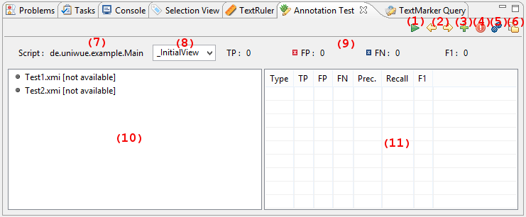

Apache UIMA TextMarker Guide and Reference
Version 2.0.0
Copyright © 2006, 2013 The Apache Software Foundation
License and Disclaimer. The ASF licenses this documentation to you under the Apache License, Version 2.0 (the "License"); you may not use this documentation except in compliance with the License. You may obtain a copy of the License at
Unless required by applicable law or agreed to in writing, this documentation and its contents are distributed under the License on an "AS IS" BASIS, WITHOUT WARRANTIES OR CONDITIONS OF ANY KIND, either express or implied. See the License for the specific language governing permissions and limitations under the License.
Trademarks. All terms mentioned in the text that are known to be trademarks or service marks have been appropriately capitalized. Use of such terms in this book should not be regarded as affecting the validity of the the trademark or service mark.
February, 2013
Table of Contents
- 1. Apache UIMA TextMarker Overview
- 2. Apache UIMA TextMarker Language
- 2.1. Syntax
- 2.2. Basic annotations and tokens
- 2.3. Quantifiers
- 2.4. Declarations
- 2.5. Expressions
- 2.6. Conditions
- 2.6.1. AFTER
- 2.6.2. AND
- 2.6.3. BEFORE
- 2.6.4. CONTAINS
- 2.6.5. CONTEXTCOUNT
- 2.6.6. COUNT
- 2.6.7. CURRENTCOUNT
- 2.6.8. ENDSWITH
- 2.6.9. FEATURE
- 2.6.10. IF
- 2.6.11. INLIST
- 2.6.12. IS
- 2.6.13. LAST
- 2.6.14. MOFN
- 2.6.15. NEAR
- 2.6.16. NOT
- 2.6.17. OR
- 2.6.18. PARSE
- 2.6.19. PARTOF
- 2.6.20. PARTOFNEQ
- 2.6.21. POSITION
- 2.6.22. REGEXP
- 2.6.23. SCORE
- 2.6.24. SIZE
- 2.6.25. STARTSWITH
- 2.6.26. TOTALCOUNT
- 2.6.27. VOTE
- 2.7. Actions
- 2.7.1. ADD
- 2.7.2. ADDFILTERTYPE
- 2.7.3. ADDRETAINTYPE
- 2.7.4. ASSIGN
- 2.7.5. CALL
- 2.7.6. CLEAR
- 2.7.7. COLOR
- 2.7.8. CONFIGURE
- 2.7.9. CREATE
- 2.7.10. DEL
- 2.7.11. DYNAMICANCHORING
- 2.7.12. EXEC
- 2.7.13. FILL
- 2.7.14. FILTERTYPE
- 2.7.15. GATHER
- 2.7.16. GET
- 2.7.17. GETFEATURE
- 2.7.18. GETLIST
- 2.7.19. LOG
- 2.7.20. MARK
- 2.7.21. MARKFAST
- 2.7.22. MARKLAST
- 2.7.23. MARKONCE
- 2.7.24. MARKSCORE
- 2.7.25. MARKTABLE
- 2.7.26. MATCHEDTEXT
- 2.7.27. MERGE
- 2.7.28. REMOVE
- 2.7.29. REMOVEDUPLICATE
- 2.7.30. REMOVEFILTERTYPE
- 2.7.31. REMOVERETAINTYPE
- 2.7.32. REPLACE
- 2.7.33. RETAINTYPE
- 2.7.34. SETFEATURE
- 2.7.35. SHIFT
- 2.7.36. TRANSFER
- 2.7.37. TRIE
- 2.7.38. TRIM
- 2.7.39. UNMARK
- 2.7.40. UNMARKALL
- 2.8. Robust extraction using filtering
- 2.9. Blocks
- 2.10. Heuristic extraction using scoring rules
- 2.11. Modification
- 2.12. External resources
- 3. Apache UIMA TextMarker Workbench
Chapter 1. Apache UIMA TextMarker Overview
1.1. What is Apache UIMA TextMarker?
Apache UIMA™ TextMarker is a rule-based script language supported by Eclipse-based tooling. The language is designed to enable rapid development of text processing applications within UIMA. A special focus lies on the intuitive and flexible domain specific language for defining patterns of annotations. Writing rules for information extraction or other text processing applications is a tedious process. The Eclipse-based tooling for TextMarker, called the Apache UIMA TextMarker Workbench, was created to support the user and to facilitate every step when writing TextMarker rules. Both the TextMarker rule language and the TextMarker Workbench integrate smoothly with Apache UIMA.
1.2. Getting started
This section gives a short roadmap how to read the documentation and gives some recommendations how to start developing TextMarker-based applications. This documentation assumes that the reader knows about the core concepts of Apache UIMA. Knowledge of the meaning and usage of the terms “CAS”, “Feature Structure”, “Annotation”, “Type”, “Type System” and “Analysis Engine” is required. Please refer to the documentation of Apache UIMA for an introduction.
Unexperienced users that want to learn about TextMarker can start with the next two sections: Section 1.3, “Core Concepts” gives a short overview of the core ideas and features of the TextMarker language and Workbench. This section introduces the main concepts of the TextMarker language. It explains how TextMarker rules are composed and applied, and discusses the advantages of the TextMarker system. The following Section 1.4, “Learning by Example” approaches the TextMarker language using a different perspective. Here, the language is introduced by examples. The first example starts with explaining how a simple rule looks like, and each following example extends the syntax or semantics of the TextMarker language. After the consultation of these two sections, the reader is expected to have gained enough knowledge to start writing her first TextMarker-based application.
The TextMarker Workbench was created to support the user and to facilitate the development process. It is strongly recommended to
use this Eclipse-based IDE since it, for example, automatically configures the component descriptors and provides editing support like
syntax checking. Section 3.1, “Installation” describes how the TextMarker Workbench is installed.
TextMarker rules can also be applied on CAS without using the TextMarker Workbench.
Section 1.5.1.1, “Apply TextMarker Analysis Engine in plain Java” contains examples how to execute TextMarker rules in plain java.
A good way to get started with TextMarker is to play around with an exemplary TextMarker project, e.g.,
https://svn.apache.org/repos/asf/uima/sandbox/textmarker/trunk/example-projects/ExampleProject. This TextMarker project
contains some simple rules for processing citation metadata.
Chapter 2, Apache UIMA TextMarker Language and Chapter 3, Apache UIMA TextMarker Workbench provide more detailed descriptions and can be referred to in order to gain knowledge of specific parts of the TextMarker language or the TextMarker Workbench.
1.3. Core Concepts
The TextMarker language is an imperative rule language extended with scripting elements. A TextMarker rule defines a pattern of annotations with additional conditions. If this pattern applies, then the actions of the rule are performed on the matched annotations. A rule is composed of a sequence of rule elements and a rule element essentially consist of four parts: A matching condition, an optional quantifier, a list of conditions and a list of actions. The matching condition is typically a type of an annotation by which the rule element matches on the covered text of one of those annotations. The quantifier specifies, whether it is necessary that the rule element successfully matches and how often the rule element may match. The list of conditions specifies additional constraints that the matched text or annotations need to fulfill. The list of actions defines the consequences of the rule and often creates new annotations or modifies existing annotations. They are only applied if all rule elements of the rule have successfully matched. Examples for TextMarker rules can be found in Section 1.4, “Learning by Example”.
When TextMarker rules are applied on a document, respectively on a CAS, then they are always grouped in a script file. However, a TextMarker script file does not only contain rules, but also other statements. First of all, each script file starts with a package declaration followed by a list of optional imports. Then, common statements like rules, type declarations or blocks build the body and functionality of a script. Section 1.5.1.1, “Apply TextMarker Analysis Engine in plain Java” gives an example, how TextMarker scripts can be applied in plain Java. TextMarker script files are naturally organized in TextMarker projects, which is a concept of the TextMarker Workbench. The structure of a TextMarker project is described in Section 3.3, “TextMarker Projects”
The inference of TextMarker rules, that is the approach how the rules are applied, can be described as imperative depth-first matching. In contrast to similar rule-based systems, TextMarker rules are applied in the order they are defined in the script. The imperative execution of the matching rules may have disadvantages, but also many advantages like an increased rate of development or an easier explanation. The second main property of the TextMarker inference is the depth-first matching. When a rule matches on a pattern of annotations, then an alternative is always tracked until it has matched or failed before the next alternative is considered. The behavior of a rule may change, if it has already matched on an early alternative and thus has performed an action, which influences some constraints of the rule. Examples, how TextMarker rules are applied, are given in Section 1.4, “Learning by Example”.
The TextMarker language provides the possibility to approach an annotation problem in different ways. Let us distinguish some approaches as an example. It is common in the TextMarker language to create many annotations of different types. These annotations are probably not the targeted annotation of the domain, but can be helpful to incrementally approximate the annotation of interest. This enables the user to work “bottom-up” and “top-down”. In the former approach, the rules add incrementally more complex annotations using simple ones until the target annotation can be created. In the latter approach, the rules get more specific while partitioning the document in smaller segments, which result in the targeted annotation, eventually. By using many “helper”-annotations, the engineering task becomes easier and more comprehensive. The TextMarker language provides distinctive language elements for different tasks. There are, for example, actions that are able to create new annotations, actions that are able to remove annotations and actions that are able to modify the offsets of annotations. This enables, amongst other things, a transformation-based approach. The user starts by creating general rules that are able to annotate most of the text fragments of interest. Then, instead of making these rules more complex by adding more conditions for situations where they fail, additional rules are defined that correct the mistakes of the general rules, e.g., by deleting false positive annotations. Section 1.4, “Learning by Example” provides some examples how TextMarker rules can be engineered.
To write rules manually is a tedious and error-prone process. The TextMarker Workbench was developed to facilitate writing rules by providing as much tooling support as possible. This includes, for example, syntax checking and auto completion, which make the development less error-prone. The user can annotate documents and use these documents as unit tests for test-driven development or quality maintenance. Sometimes, it is necessary to debug the rules because they do not match as expected. In this case, the explanation perspective provides views that explain every detail of the matching process. Finally, the TextMarker language can also be used by the tooling, for example, by the “Query” view. Here, TextMarker rules can be used as query statements in order to investigate annotated documents.
TextMarker smoothly integrates with Apache UIMA. First of all, the TextMarker rules are applied using a generic Analysis Engine and thus TextMarker scripts can easily be added to Apache UIMA pipelines. TextMarker also provides the functionality to import and use other UIMA components like Analysis Engines and Type Systems. TextMarker rules can refer to every type defined in an imported type system, and the TextMarker Workbench generates a type system descriptor file containing all types that were defined in a script file. Any Analysis Engine can be executed by rules as long as their implementation is available in the classpath. Therefore, functionality outsourced in an arbitrary Analysis Engine can be added and used within TextMarker.
1.4. Learning by Example
This section gives an introduction to the TextMarker language by explaining the rule syntax and inference with some simplified examples. It is recommended to use the TextMarker Workbench to write TextMarker rules in order to gain advantages like syntax checking. A short description how to install the TextMarker Workbench is given here. The following examples make use of the annotations added by the default seeding of the TextMarker Analysis Engine. Their meaning is explained along with the examples.
Note
The examples in this section are not valid script files as they are missing at least a package declaration. In order to obtain a valid script file, please ensure that all used types are imported or declared and that a package declaration like “PACKAGE uima.textmarker.example;” is added in the first line of the script.
The first example consists of a declaration of a type followed by a simple rule. Type declarations always start with the keyword “DECLARE” followed by the short name of the new type. The namespace of the type is equal to the package declaration of the script file. There is also the possibility to create more complex types with features or specific parent types, but this will be neglected for now. In the example, a simple annotation type with the short name “Animal” is defined. After the declaration of the type, a rule with one rule element is given. TextMarker rules in general can consist of a sequence of rule elements. Simple rule elements themselves consist of four parts: A matching condition, an optional quantifier, an optional list of conditions and an optional list of actions. The rule element in the following example has a matching condition “W”, an annotation type standing for normal words. Statements like declarations and rules always end with a semicolon.
DECLARE Animal;
W{REGEXP("dog") -> MARK(Animal)};
The rule element also contains one condition and one action, both surrounded by curly parentheses. In order to distinguish conditions from actions they are separated by “->”. The condition “REGEXP("dog")” indicates that the matched word must match the regular expression “dog”. If the matching condition and the additional regular expression are fulfilled, then the action is executed, which creates a new annotation of the type “Animal” with the same offsets as the matched token. The default seeder does actually not add annotations of the type “W”, but annotations of the types “SW” and “CW” for small written words and capitalized words, which both have the parent type “W”.
Since it is tedious to create Animal annotations by matching on different regular expression, we apply an external dictionary in the next example. The first line defines a word list named “AnimalsList”, which is located in the resource folder (the file “Animals.txt” contains one animal name in each line). After the declaration of the type, a rule uses this word list to find all occurrences of animals in the complete document.
WORDLIST AnimalsList = 'Animals.txt;'
DECLARE Animal;
Document{-> MARKFAST(Animal, AnimalsList)};
The matching condition of the rule element refers to the complete document, or more specific to the annotation of the type “DocumentAnnotation”, which covers the whole document. The action “MARKFAST” of this rule element creates an annotation of the type “Animal” for each found entry of the dictionary “AnimalsList”.
The next example introduces rules with more than one rule element, whereby one of them is a composed rule element. The following rule tries to annotate occurrences of animals separated by commas, e.g., “dog, cat, bird”.
DECLARE AnimalEnum;
(Animal COMMA)+{-> MARK(AnimalEnum,1,2)} Animal;
The rule consists of two rule elements, with “(Animal COMMA)+{-> MARK(AnimalEnum,1,2)}” being the first rule element and “Animal” the second one. Let us take a closer look at the first rule element. This rule element is actually composed of two normal rule elements, that are “Animal” and “COMMA”, and contains a greedy quantifier and one action. This rule element, therefore, matches on one Animal annotation and a following comma. This is repeated until one of the inner rule elements does not match anymore. Then, there has to be another Animal annotation afterwards, specified by the second rule element of the rule. In this case, the rule matches and its action is executed: The MARK action creates a new annotation of the type “AnimalEnum”. However, in contrast to the previous examples, this action also contains two numbers. These numbers refer to the rule elements that should be used to calculate the span of the created annotation. The numbers “1, 2” state that the new annotation should start with the first rule element, the composed one, and should end with the second rule element.
Let us make the composed rule element more complex. The following rule also matches on lists of animals, which are separated by semicolon. A disjunctive rule element is therefore added, indicated by the symbol “|”, which matches on annotations of the type “COMMA” or “SEMICOLON”.
(Animal (COMMA | SEMICOLON))+{-> MARK(AnimalEnum,1,2)} Animal;
Rule elements can contain more then one condition. The rule in the next example tries to identify headlines, which are bold, underlined and end with a colon.
DECLARE Headline;
Paragraph{CONTAINS(Bold, 90, 100, true),
CONTAINS(Underlined, 90, 100, true), ENDSWITH(COLON)
-> MARK(Headline)};
The matching condition of this rule element is given with the type “Paragraph”, thus the rule takes a look at all Paragraph annotations. The rule matches only if the three conditions, separated by commas, are fulfilled. The first condition “CONTAINS(Bold, 90, 100, true)” states that 90%-100% of the matched paragraph annotation should also be annotated with annotations of the type “Bold”. The boolean parameter “true” indicates that amount of Bold annotations should be calculated relatively to the matched annotation. The two numbers “90,100” are, therefore, interpreted as percent amounts. The exact calculation of the coverage is dependent on the tokenization of the document and is neglected for now. The second condition “CONTAINS(Underlined, 90, 100, true)” consequently states that the paragraph should also contain at least 90% of annotations of the type “underlined”. The third condition “ENDSWITH(COLON)” finally forces the Paragraph annotation to end with a colon. It is only fulfilled, if there is an annotation of the type “COLON”, which has an end offset equal to the end offset of the matched Paragraph annotation.
The readability and maintenance of rules does not increase, if more conditions are added. One of the strengths of the TextMarker language is that it provides different approaches to solve an annotation task. The next two examples introduce actions for transformation-based rules.
Headline{-CONTAINS(W) -> UNMARK(Headline)};
This rule consists of one condition and one action. The condition “-CONTAINS(W)” is negated (indicated by the character “-”), and is therefore only fulfilled, if there are no annotations of the type “W” within the bound of the matched Headline annotation. The action “UNMARK(Headline)” removes the matched Headline annotation. Put into simple words, headlines that contain no words at all are not headlines.
The next rule does not remove an annotation, but changes its offsets dependent on the context.
Headline{-> SHIFT(Headline, 1, 2)} COLON;
Here, the action “SHIFT(Headline, 1, 2)” expands the matched Headline annotation to the next colon, if that Headline annotation is followed by a COLON annotation.
TextMarker rules can contain arbitrary conditions and actions, which is illustrated by the next example.
DECLARE Month, Year, Date;
ANY{INLIST(MonthsList) -> MARK(Month), MARK(Date,1,3)}
PERIOD? NUM{REGEXP(".{2,4}") -> MARK(Year))};
This rule consists of three rule elements. The first one matches on every token, which has a covered text that occurs in a word lists named “MonthsList”. The second rule element is optional and does not need to be fulfilled, which is indicated by the quantifier “?”. The last rule element matches on numbers that fulfill the regular expression “REGEXP(".{2,4}"” and are therefore at least two characters to a maximum of four characters long. If this rule successfully matches on a text passage, then its three actions are executed: An annotation of the type “Month” is created for the first rule element, an annotation of the type “Year” is created for the last rule element and an annotation of the type “Date” is created for the span of all three rule elements. If the word list contains the correct entries, then this rule matches on strings like “Dec. 2004”, “July 85” or “11.2008” and creates the corresponding annotations.
After introducing the composition of rule elements, the default matching strategy is examined. The two rules in the next example create an annotation for a sequence of arbitrary tokens with the only difference of one condition.
DECLARE Text1, Text2;
ANY+{ -> MARK(Text1)};
ANY+{-PARTOF(Text2) -> MARK(Text2)};
The first rule matches on each occurrence of an arbitrary token and continues this until the end of the document is reached. This is caused by the greedy quantifier “+”. Note that this rule considers each occurrence of a token and is therefore executed for each token resulting many overlapping annotations. This behavior is illustrated with an example: When applied on the document “Peter works for Frank”, the rule creates four annotations with the covered texts “Peter works for Frank”, “works for Frank”, “for Frank” and “Frank”. The rule first tries to match on the token “Peter” and continues its matching. Then, it tries to match on the token “works” and continues its matching, and so on.
In this example, the second rule only returns one annotation, which covers the complete document. This is caused by the additional condition “-PARTOF(Text2)”. The PARTOF condition is fulfilled, if the matched annotation is located within an annotation of the given type, or put in simple words, if the matched annotation is part of an annotation of the type “Text2”. When applied on the document “Peter works for Frank”, the rule matches on the first token “Peter”, continues its match and creates an annotation of the type “Text2” for the complete document. Then it tries to match on the second token “works”, but fails, because this token is already part of an Text2 annotation.
TextMarker rules can not only be used to create or modify annotations, but also to create features for annotations. The next example defines and assigns a relation of employment, by storing the given annotations as feature values.
DECLARE Annotation EmplRelation
(Employee employeeRef, Employer employerRef);
Sentence{CONTAINS(EmploymentIndicator) -> CREATE(EmplRelation,
"employeeRef" = Employee, "employerRef" = Employer)};
The first statement of this example is a declaration that defines a new type of annotation named “EmplRelation”. This annotation has two features: One feature with the name “employeeRef” of the type “Employee” and one feature with the name “employerRef” of the type “Employer”. The second statement of this example, which is a simple rule, creates one annotation of the type “EmplRelation” for each Sentence annotation that contains at least one annotation of the type “EmploymentIndicator”. Additionally to creating an annotation, the CREATE action also assigns an annotation of the “Employee”, which needs to be located within the span of the matched sentence, to the feature “employeeRef” and an Employer annotation to the feature “employerRef”. The annotations mentioned in this example need to be present in advance.
In the last example, the values of features were defined as annotation types. However, also primitive types can be used, as will be shown in the next example, together with a short introduction of variables.
DECLARE Annotation MoneyAmount(STRING currency, INT amount);
INT moneyAmount;
STRING moneyCurrency;
NUM{PARSE(moneyAmount)} SPECIAL{REGEXP("€") -> MATCHEDTEXT(moneyCurrency),
CREATE(MoneyAmount, 1, 2, "amount" = moneyAmount,
"currency" = moneyCurrency)};
First, a new annotation with the name “MoneyAmount” and two features are defined, one string feature and one integer feature. Then, two TextMarker variables are declared, one integer variable and one string variable. The rule matches on a number, whose value is stored in the variable “moneyAmount”, followed by a special token that needs to be equal to the string “€”. Then, the covered text of the special annotation is stored in the string variable “moneyCurrency” and annotation of the type “MoneyAmount” spanning over both rule elements is created. Additionally, the variables are assigned as feature values.
TextMarker script files with many rules can quickly confuse the reader. The TextMarker language, therefore, allows to import other script files in order to increase the modularity of a project or to create rule libraries. The next example imports the rules together with all known types of another script file and executes that script file.
SCRIPT uima.textmarker.example.SecondaryScript;
Document{-> CALL(SecondaryScript)};
The script file with the name “SecondaryScript.tm”, which is located in the package “uima/textmarker/example”, is imported and executed by the CALL action on the complete document. The script needs to be located in the folder specified by the parameter scriptPaths. It is also possible to import script files of other TextMarker projects, e.g., by adapting the configuration parameters of the TextMarker Analysis Engine or by setting a project reference in the project properties of a TextMarker project.
The types of important annotations of the application are often defined in a separate type system. The next example shows how to import those types.
TYPESYSTEM my.package.NamedEntityTypeSystem;
Person{PARTOF(Organization) -> UNMARK(Person)};
The type system descriptor file with the name “NamedEntityTypeSystem.xml” located in the package “my/package” is imported. The descriptor needs to be located in a folder specified by the parameter descriptorPaths.
It is sometimes easier to express functionality with control structures known by programming languages rather than to engineer all functionality only with matching rules. The TextMarker language provides the BLOCK element for some of these use cases. The TextMarker BLOCK element starts with the keyword “BLOCK” followed by its name in parentheses. The name of a block has two purposes: On the one hand, it is easier to distinguish the block, if they have different names, e.g., in the explain perspective of the TextMarker Workbench. On the other hand, the name can be used to execute this block using the CALL action. Hereby, it is possible to access only specific sets of rules of other script files, or to implement a recursive call of rules. After the name of the block, a single rule element is given, which has curly parentheses, even if no conditions or actions are specified. Then, the body of the block is framed by curly brackets.
BLOCK(English) Document{FEATURE("language", "en")} {
// rules for english documents
}
BLOCK(German) Document{FEATURE("language", "de")} {
// rules for german documents
}
This example contains two simple BLOCK statements. The rules defined within the block are only executed, if the condition in the head of the block is fulfilled. The rules of the first block are only considered if the feature “language” of the document annotation has the value “en”. Following this, the rules of the second block are only considered for German documents.
The rule element of the block definition can also refer to other annotation types than “Document”. While the last example implemented something similar to an if-statement, the next example provides a show case for something similar to a for-each-statement.
DECLARE SentenceWithNoLeadingNP;
BLOCK(ForEach) Sentence{} {
Document{-STARTSWITH(NP) -> MARK(SentenceWithNoLeadingNP)};
}
Here, the rule in the block statement is performed for each occurence of an annotation of the type “Sentence”. The rule within the block matches on the complete document, which is the current sentence in the context of the block statement. As a consequence, this example creates an annotation of the type “SentenceWithNoLeadingNP” for each sentence that does not start with a NP annotation.
Let us take a closer look on what exactly the TextMarker rules match. The following rule matches on a word followed by another word:
W W;
To be more precise, this rule matches on all documents like “Apache UIMA”, “Apache UIMA”, “ApacheUIMA”, “Apache <b>UIMA</b>”. There are two main reasons for this: First of all, it depends on how the available annotations are defined. The default seeder for the inital annotations creates an annotation for all characters until an upper case character occurs. Thus, the string “ApacheUIMA” consists of two tokens. However, more important, the TextMarker language provides a concept of visibility of the annotations. By default, all annotations of the types “SPACE”, “NBSP”, “BREAK” and “MARKUP” (whitespace and XML elements) are filtered and not visible. This holds of course for their covered text, too. The rule elements skip all positions of the document where those annotations occur. The rule in the last example matches on all examples. Without the default filtering settings, with all annotations set to visible, the rule matches only on the document “ApacheUIMA” since it is the only one that contains two word annotations without any whitespace between them.
The filtering setting can also be modified by the TextMarker rules themselves. The next example provides rules that extend and limit the amount of visible text of the document.
Sentence;
Document{-> RETAINTYPE(SPACE)};
Sentence;
Document{-> FILTERTYPE(CW)};
Sentence;
Document{-> RETAINTYPE, FILTERTYPE};
The first rule matches on sentences, which do not start with any filtered type. Sentences that start with whitespace or markup, for example, are not considered. The next rule retains all text that is covered by annotations of the type “SPACE” meaning that the rule elements are now sensible to whitespaces. The following rule will, therefore, match on sentences that start with whitespaces. The third rule now filters the type “CW” with the consequence that all capitalized words are invisible. If the following rule now wants to match on sentences, then this is only possible for Sentence annotations that do not start with a capitalized word. The last rule finally resets the filtering setting to the default configuration in the TextMarker Analysis Engine.
The next example gives a showcase for importing external Analysis Engines and for modifying the documents by creating a new view called “modified”. Additional Analysis Engines can be imported with the keyword “ENGINE” followed by the name of the descriptor. These imported Analysis Engines can be executed with the actions “CALL” or “EXEC”. If the executed Analysis Engine adds, removes or modifies annotations, then their types need to be mentioned when calling the descriptor, or else these annotations will not be correctly processed by the following TextMarker rules.
ENGINE utils.Modifier;
Date{-> DEL};
MoneyAmount{-> REPLACE("<MoneyAmount/>")};
Document{-> COLOR(Headline, "green")};
Document{-> EXEC(Modifier)};
In this example, we first import an Analysis Engine defined by the descriptor “Modifier.xml” located in the folder “utils”. The descriptor needs to be located in the folder specified by the parameter descriptorPaths. The first rule deletes all text covered by annotations of the type “Date”. The second rule replaces the text of all annotations of the type “MoneyAmount” with the string “<MoneyAmount/>”. The third rule remembers to set the background color of text in Headline annotation to green. The last rule finally performs all of these changes in an additonal view called “modified”, which is specified in the configuration parameters of the analysis engine. Section 1.5.4, “Modifier” and Section 2.11, “Modification” provide a more detailed description.
1.5. UIMA Analysis Engines
This section gives an overview of the UIMA Analysis Engines shipped with TextMarker. The most important one is “TextMarkerEngine”, a generic analysis engine, which is able to interpret and execute script files. The other analysis engines provide support for some additional functionality or add certain types of annotations.
1.5.1. TextMarker Engine
This generic Analysis Engine is the most important one for the TextMarker language since it is responsible for applying the TextMarker rules on a CAS. Its functionality is configured by the configuration parameters, which, for example, specify the rule file that should be executed. In the TextMarker IDE, a basic template named “BasicEngine.xml” is given in the descriptor folder of a TextMarker project and correctly configured descriptors typically named “MyScriptEngine.xml” are generated in the descriptor folder corresponding to the package namespace of the script file. The available configuration parameters of the TextMarker Analysis Engine are described in the following.
1.5.1.1. Apply TextMarker Analysis Engine in plain Java
Let us assume that the reader wrote the TextMarker rules using the TextMarker Workbench, which already creates correctly configured descriptors. In this case, the following java code can be used to apply the TextMarker script.
File specFile = new File("pathToMyWorkspace/MyProject/descriptor/"+
"my/package/MyScriptEngine.xml");
XMLInputSource in = new XMLInputSource(specFile);
ResourceSpecifier specifier = UIMAFramework.getXMLParser().
parseResourceSpecifier(in);
// for import by name... set the datapath in the ResourceManager
AnalysisEngine ae = UIMAFramework.produceAnalysisEngine(specifier);
CAS cas = ae.newCAS();
cas.setDocumentText("This is my document.");
ae.process(cas);
Note
The TextMarker Analysis Engine utilizes type priorities. If the CAS object is not created using the TextMarker Analysis Engine descriptor by other means, then please provide the necessary type priorities for a valid execution of the TextMarker rules.
If the TextMarker script was written, for example, with a common text editor and no configured descriptors are yet available, then the following java code can be used, which, however, is only applicable for executing single script files that do not import additional components or scripts. In this case the other parameters, e.g., “additionalScripts”, need to be configured correctly.
URL aedesc = TextMarkerEngine.class.getResource("BasicEngine.xml");
XMLInputSource inae = new XMLInputSource(aedesc);
ResourceSpecifier specifier = UIMAFramework.getXMLParser().
parseResourceSpecifier(inae);
ResourceManager resMgr = UIMAFramework.newDefaultResourceManager();
AnalysisEngineDescription aed = (AnalysisEngineDescription) specifier;
TypeSystemDescription basicTypeSystem = aed.getAnalysisEngineMetaData().
getTypeSystem();
Collection<TypeSystemDescription> tsds =
new ArrayList<TypeSystemDescription>();
tsds.add(basicTypeSystem);
// add some other type system descriptors
// that are needed by your script file
TypeSystemDescription mergeTypeSystems = CasCreationUtils.
mergeTypeSystems(tsds);
aed.getAnalysisEngineMetaData().setTypeSystem(mergeTypeSystems);
aed.resolveImports(resMgr);
AnalysisEngine ae = UIMAFramework.produceAnalysisEngine(aed,
resMgr, null);
File scriptFile = new File("path/to/file/MyScript.tm");
ae.setConfigParameterValue(TextMarkerEngine.SCRIPT_PATHS,
new String[] { scriptFile.getParent().getAbsolutePath() });
String name = scriptFile.getName().substring(0,
scriptFile.getName().length() - 3);
ae.setConfigParameterValue(TextMarkerEngine.MAIN_SCRIPT, name);
ae.reconfigure();
CAS cas = ae.newCAS();
cas.setDocumentText("This is my document.");
ae.process(cas);
1.5.1.2. Configuration Parameters
The configuration parameters of the TextMarker Analysis Engine can be subdivided into three different groups: parameters for the setup of the environment (mainScript to additionalExtensions), parameters that change the behavior of the analysis engine (reloadScript to simpleGreedyForComposed) and parameters for creating additional information how the rules were executed (debug to createdBy). First, a short overview of the configuration parameters is given in Table 1.1, “Configuration parameters of the TextMarker Analysis Engine ”. Afterwards, all parameters are described in detail with examples.
To change the value of any configuration parameter within a TextMarker script, the CONFIGURE action (see Section 2.7.8, “CONFIGURE”) can be used. For changing behaviour of dynamicAnchoring the DYNAMICANCHORING action (see Section 2.7.11, “DYNAMICANCHORING”) is recommended.
Table 1.1. Configuration parameters of the TextMarker Analysis Engine
| Name | Short description | Type |
|---|---|---|
| mainScript | Name with complete namespace of the script which will be interpreted and executed by the analysis engine. | Single String |
| scriptEncoding | Encoding of all TextMarker script files. | Single String |
| scriptPaths | List of absolute locations, which contain the necessary script files like the main script. | Multi String |
| descriptorPaths | List of absolute locations, which contain the necessary descriptor files like type systems. | Multi String |
| resourcePaths | List of absolute locations, which contain the necessary resource files like word lists. | Multi String |
| additionalScripts | List of names with complete namespace of additional scripts, which can be referred to. | Multi String |
| additionalEngines | List of names with complete namespace of additional analysis engines, which can be called by TextMarker rules. | Multi String |
| additionalEngineLoaders | List of class names of implementations that are able to perform additional task when loading external analysis engines. | Multi String |
| additionalExtensions | List of factory classes for additional extensions of the TextMarker language like proprietary conditions. | Multi String |
| reloadScript | Option to initialize the rule script each time the analysis engine processes a CAS. | Single Boolean |
| seeders | List of class names that provide additional annotations before the rules are executed. | Multi String |
| defaultFilteredTypes | List of complete type names of annotations that are invisible by default. | Multi String |
| removeBasics | Option to remove all inference annotations after execution of the rule script. | Single Boolean |
| dynamicAnchoring | Option to allow rule matches to start at any rule element. | Single Boolean |
| lowMemoryProfile | Option to decrease the memory consumption when processing a large CAS. | Single Boolean |
| simpleGreedyForComposed | Option to activate a different inferencer for composed rule elements. | Single Boolean |
| debug | Option to add debug information to the CAS. | Single Boolean |
| debugWithMatches | Option to add information about the rule matches to the CAS. | Single Boolean |
| debugOnlyFor | List of rule ids. If provided, then debug information is only created for those rules. | Multi String |
| profile | Option to add profile information to the CAS. | Single Boolean |
| statistics | Option to add statistics of conditions and actions to the CAS. | Single Boolean |
| createdBy | Option to add additional information, which rule created a annotation. | Single Boolean |
mainScript
This parameter specifies the rule file that will be executed by the analysis engine and is, therefore, one of the most important ones. The exact name of the script is given by the complete namespace of the file, which corresponds to its location relative to the given parameter scriptPaths. The single names of packages (or folders) are separated by periods. An exemplary value for this parameter could be "org.apache.uima.Main", whereas "Main" specifies the file containing the rules and "org.apache.uima" its package. In this case, the analysis engine loads the script file "Main.tm", which is located in the folder structure "org/apache/uima/". This parameter has no default value and has to be provided, although it is not specified as mandatory.
scriptEncoding
This parameter specifies the encoding of the rule files. Its default value is "UTF-8".
scriptPaths
The parameter scriptPaths refers to a list of String values, which specify the possible locations of script files. The given locations are absolute paths. A typical value for this parameter is, for example, "C:/TextMarker/MyProject/script/". If the parameter mainScript is set to org.apache.uima.Main, then the absolute path of the script file has to be "C:/TextMarker/MyProject/script/org/apache/uima/Main.tm". This parameter can contain multiple values, as the main script can refer to multiple projects similar to a class path in Java.
descriptorPaths
This parameter specifies the possible locations for descriptors like analysis engines or type systems, similar to the parameter scriptPaths for the script files. A typical value for this parameter is for example "C:/TextMarker/MyProject/descriptor/". The relative values of the parameter additionalEngines are resolved to these absolute locations. This parameter can contain multiple values, as the main script can refer to multiple projects similar to a class path in Java.
resourcePaths
This parameter specifies the possible locations of additional resources like word lists or CSV tables. The string values have to contain absolute locations, for example, "C:/TextMarker/MyProject/resources/".
additionalScripts
The parameter additionalScripts is defined as a list of string values and contains script files, which are additionally loaded by the analysis engine. These script files are specified by their complete namespace, exactly like the value of the parameter mainScript and can be refered to by language elements, e.g., by executing the containing rules. An exemplary value of this parameter is "org.apache.uima.SecondaryScript". In this example, the main script could import this script file by the declaration "SCRIPT org.apache.uima.SecondaryScript;" and then could execute it with the rule "Document{-> CALL(SecondaryScript)};".
additionalEngines
This parameter contains a list of additional analysis engines, which can be executed by the TextMarker rules. The single values are given by the name of the analysis engine with their complete namespace and have to be located relative to one value of the parameter descriptorPaths, the location where the analysis engine searches for the descriptor file. An example for one value of the parameter is "utils.HtmlAnnotator", which points to the descriptor "HtmlAnnotator.xml" in the folder "utils".
additionalEngineLoaders
The parameter "additionalEngineLoaders" specifies a list of optional implementations of the interface "org.apache.uima.textmarker.extensions.IEngineLoader", which can be used to application-specific configurations of additional analysis engines.
additionalExtensions
This parameter specifies optional extensions of the TextMarker language. The elements of the string list have to implement the interface "org.apache.uima.textmarker.extensions.ITextMarkerExtension". With these extensions, application-specific conditions and actions can be added to the set of provided ones.
reloadScript
This boolean parameter indicates whether the script or resource files should be reloaded when processing a CAS. The default value is set to false. In this case, the script files are loaded when the analysis engine is initialized. If script files or resource files are extended, e.g., a dictionary is filled yet when a collection of documents are processed, then the parameter is needed to be set to true in order to include the changes.
seeders
This list of string values refers to implementations of the interface "org.apache.uima.textmarker.seed.TextMarkerAnnotationSeeder", which can be used to automatically add annotations to the CAS. The default value of the parameter is a single seeder, namely "org.apache.uima.textmarker.seed.DefaultSeeder" that adds annotations for token classes like CW, MARKUP or SEMICOLON. Remember that additional annotations can also be added with an additional engine that is executed by a TextMarker rule.
defaultFilteredTypes
This parameter specifies a list of types, which are filtered by default when executing a script file. Using the default values of this parameter, whitespaces, line breaks and markup elements are not visible to TextMarker rules. The visibility of annotations and, therefore, the covered text can be changed using the actions FILTERTYPE and RETAINTYPE.
removeBasics
This parameter specifies whether the inference annotations created by the analysis engine should be removed after processing the CAS. The default value is set to false.
dynamicAnchoring
If this parameter is set to true, then the TextMarker rules are not forced to start to match with the first rule element. Rather, the rule element referring to the most rare type is chosen. This option can be utilized to optimize the performance. Please mind that the matching result can vary in some cases when greedy rule elements are applied. The default value is set to false.
lowMemoryProfile
This parameter specifies whether the memory consumption should be reduced. This parameter should be set to true for very large CAS documents (e.g., > 500k tokens), but it also reduces the performance. The default value is set to false.
simpleGreedyForComposed
This parameter specifies whether a different inference strategy for composed rule elements should be applied. This option is only necessary when the composed rule element is expected to match very often, e.g., a rule element like (ANY ANY). The default value of this parameter is set to false.
debug
If this parameter is set to true, then additional information about the execution of a rule script is added to the CAS. The actual information is specified by the following parameters. The default value of this parameter is set to false.
debugWithMatches
This parameter specificies whether the match information (covered text) of the rules should be stored in the CAS. The default value of this parameter is set to false.
debugOnlyFor
This parameter specifies a list of rule-ids that enumerate the rule for which debug information should be created. No specific ids are given by default.
profile
If this parameter is set to true, then additional information about the runtime of applied rules is added to the CAS. The default value of this parameter is set to false.
statistics
If this parameter is set to true, then additional information about the runtime of TextMarker language elements like conditions and actions is added to the CAS. The default value of this parameter is set to false.
createdBy
If this parameter is set to true, then additional information about what annotation was created by which rule is added to the CAS. The default value of this parameter is set to false.
1.5.2. Annotation Writer
This Analysis Engine can be utilized to write the covered text of annotations in a text file, whereas each covered text is put into a new line. If the Analyis engine, for example, is configured for the type “uima.example.Person”, then all covered texts of all Person annotations are stored in a text file, one person in each line. A descriptor file for this Analysis Engine is located in the folder “descriptor/utils” of a TextMarker project.
1.5.2.1. Configuration Parameters
Output
This string parameter specifies the absolute path of the resulting file named “output.txt”. However, if an annotation of the type “org.apache.uima.examples.SourceDocumentInformation” is given, then the value of this parameter is interpreted to be relative to the URI stored in the annotation and the name of the file will be adapted to the name of the source file. The TextMarker IDE automatically adds the SourceDocumentInformation annotation when the user launches a script file. The default value of this parameter is “/../output/”.
Encoding
This string parameter specifies the encoding of the resulting file. The default value of this parameter is “UTF-8”.
Type
Only the covered texts of annotations of the type specified with this parameter are stored in the resulting file. The default value of this parameter is “uima.tcas.DocumentAnnotation”, which will store the complete document in a new file.
1.5.3. Plain Text Annotator
This Analysis Engines adds annotations for lines and paragraphs. A descriptor file for this Analysis Engine is located in the folder “descriptor/utils” of a TextMarker project. There are no configuration parameters.
1.5.4. Modifier
The Modifier Analysis Engine can be used to create an additional view, which contains all textual modifications and HTML highlightings that were specified by the executed rules. This Analysis Engine can be applied, e.g., for anonymization where all annotations of persons are replaced by the string “Person”. Furthermore, the content of the new view can optionally be stored in a new HTML file. A descriptor file for this Analysis Engine is located in the folder “descriptor/utils” of a TextMarker project.
1.5.4.1. Configuration Parameters
styleMap
This string parameter specifies the name of the style map file created by the Style Map Creator Analysis Engine, which stores the colors for additional highlightings in the modified view.
descriptorPaths
This parameter can contain multiple string values and specifies the absolute paths where the style map file can be found.
outputLocation
This optional string parameter specifies the absolute path of the resulting file named “output.modified.html”. However, if an annotation of the type “org.apache.uima.examples.SourceDocumentInformation” is given, then the value of this parameter is interpreted to be relative to the URI stored in the annotation and the name of the file will be adapted to the name of the source file. The TextMarker IDE automatically adds the SourceDocumentInformation annotation when the user launches a script file. The default value of this parameter is empty. In this case no additional html file will be created.
outputView
This string parameter specifies the name of the view, which will contain the modified document. A view of this name must not yet exist. The default value of this parameter is “modified”.
1.5.5. HMTL Annotator
This Analysis Engine provides support for HTML files by adding annotations for the HTML elements. Using the default values, the HTML Annotator creates annotations for each HTML element spanning the content of the element, whereas the most common elements are represented by own types. The document “This text is <b>bold</b>.”, for example, would be annotated with an annotation of the type “org.apache.uima.textmarker.type.html.B” for the word “bold”. The HTML annotator can be configured in order to include the start and end elements in the created annotations. A descriptor file for this Analysis Engine is located in the folder “descriptor/utils” of a TextMarker project.
1.5.5.1. Configuration Parameters
onlyContent
This parameter specifies whether created annotations should cover only the content of the HTML elements or also their start and end elements. The default value is “true”.
1.5.6. Style Map Creator
This Analysis Engine can be utilized to create style map information, which is needed by the Modifier Analysis Engine in order to create highlightings for some annotations. Style map information can be created using the COLOR action. A descriptor file for this Analysis Engine is located in the folder “descriptor/utils” of a TextMarker project.
1.5.6.1. Configuration Parameters
styleMap
This string parameter specifies the name of the style map file created by the Style Map Creator Analysis Engine, which stores the colors for additional highlightings in the modified view.
descriptorPaths
This parameter can contain multiple string values and specifies the absolute paths where the style map can be found.
1.5.7. XMI Writer
This Analysis Engine is able to serialize the processed CAS to an XMI file. One use case for the XMI Writer is, for example, a rule-based sort, which stores the processed XMI files in different folder, dependent on the execution of the rules, e.g., whether a pattern of annotations occurs or not. A descriptor file for this Analysis Engine is located in the folder “descriptor/utils” of a TextMarker project.
1.5.7.1. Configuration Parameters
Output
This string parameter specifies the absolute path of the resulting file named “output.xmi”. However, if an annotation of the type “org.apache.uima.examples.SourceDocumentInformation” is given, then the value of this parameter is interpreted to be relative to the URI stored in the annotation and the name of the file will be adapted to the name of the source file. The TextMarker IDE automatically adds the SourceDocumentInformation annotation when the user launches a script file. The default value is “/../output/”
Chapter 2. Apache UIMA TextMarker Language
This chapter provides a complete description of the Apache UIMA TextMarker language.
2.1. Syntax
TextMarker defines its own language for writing rules and rule scripts. This section gives a formal overview of its syntax.
Structure: The overall structure of a TextMarker script is defined by the following syntax.
Script -> PackageDeclaration GlobalStatements Statements
PackageDeclaration -> "PACKAGE" DottedIdentifier ";"
GlobalStatments -> GlobalStatement*
GlobalStatment -> ("TYPESYSTEM" | "SCRIPT" | "ENGINE")
DottedIdentifier2 ";"
Statements -> Statement*
Statement -> Declaration | VariableDeclaration
| BlockDeclaration | SimpleStatement ";"Comments are excluded from the syntax definition. Comments start with "//" and always go to the end of the line.
Example beginning of a TextMarker file:
PACKAGE uima.textmarker.example; // import the types of this type system // (located in the descriptor folder -> types folder) TYPESYSTEM types.BibtexTypeSystem; SCRIPT uima.textmarker.example.Author; SCRIPT uima.textmarker.example.Title; SCRIPT uima.textmarker.example.Year;
Syntax of declarations:
Declaration -> "DECLARE" (AnnotationType)? Identifier ("," Identifier )*
| "DECLARE" AnnotationType Identifier ( "("
FeatureDeclaration ")" )?
FeatureDeclaration -> ( (AnnotationType | "STRING" | "INT" | "FLOAT"
"DOUBLE" | "BOOLEAN") Identifier) )+
VariableDeclaration -> (("TYPE" Identifier ("," Identifier)*
("=" AnnotationType)?)
| ("STRING" Identifier ("," Identifier)*
("=" StringExpression)?)
| (("INT" | "DOUBLE" | "FLOAT") Identifier
("," Identifier)* ("=" NumberExpression)?)
| ("BOOLEAN" Identifier ("," Identifier)*
("=" BooleanExpression)?)
| ("WORDLIST" Identifier ("=" WordListExpression)?)
| ("WORDTABLE" Identifier ("=" WordTableExpression)?)
| ("TYPELIST" Identifier ("=" TypeListExpression)?)
| ("STRINGLIST" Identifier
("=" StringListExpression)?)
| (("INTLIST" | "DOUBLELIST" | "FLOATLIST")
Identifier ("=" NumberListExpression)?)
| ("BOOLEANLIST" Identifier
("=" BooleanListExpression)?))
AnnotationType -> BasicAnnotationType | declaredAnnotationType
BasicAnnotationType -> ('COLON'| 'SW' | 'MARKUP' | 'PERIOD' | 'CW'| 'NUM'
| 'QUESTION' | 'SPECIAL' | 'CAP' | 'COMMA'
| 'EXCLAMATION' | 'SEMICOLON' | 'NBSP'| 'AMP' | '_'
| 'SENTENCEEND' | 'W' | 'PM' | 'ANY' | 'ALL'
| 'SPACE' | 'BREAK')
BlockDeclaration -> "BLOCK" "(" Identifier ")" RuleElementWithCA
"{" Statements "}"Syntax of statements and rule elements:
SimpleStatement -> RuleElements ";"
RuleElements -> RuleElement+
RuleElement -> RuleElementType | RuleElementLiteral
| RuleElementComposed | RuleElementDisjunctive
RuleElementType -> TypeExpression QuantifierPart?
("{" Conditions? Actions? "}")?
RuleElementWithCA -> TypeExpression QuantifierPart?
"{" Conditions? Actions? "}"
RuleElementLiteral -> SimpleStringExpression QuantifierPart?
"{" Conditions? Actions? "}"
RuleElementComposed -> "(" RuleElements ")" QuantifierPart?
"{" Conditions? Actions? "}"
RuleElementDisjunctive -> "(" (TypeExpression | SimpleStringExpression)
("|" (TypeExpression | SimpleStringExpression) )+
")" QuantifierPart? "{" Conditions? Actions? }"
QuantifierPart -> "*" | "*?" | "+" | "+?" | "?" | "??"
| "[" NumberExpression "," NumberExpression "]"
| "[" NumberExpression "," NumberExpression "]?"
Conditions -> Condition ( "," Condition )*
Actions -> "->" Action ( "," Action)*
Since each condition and each action has its own syntax, conditions and actions are described in their own section. For conditions see Section 2.6, “Conditions” , for actions see Section 2.7, “Actions”. The syntax of expressions is explained in Section 2.5, “Expressions”.
Identifier:
DottedIdentifier -> Identifier ("." Identifier)*
DottedIdentifier2 -> Identifier (("."|"-") Identifier)*
Identifier -> letter (letter|digit)*
2.2. Basic annotations and tokens
The TextMarker system uses a JFlex lexer to initially create a seed of basic token annotations. These tokens build a hierarchy shown in Figure 2.1, “Basic token hierarchy ”. The “ALL” (green) annotation is the root of the hierarchy. ALL and the red marked annotation types are abstract. This means that they are actually not created by the lexer. An overview of these abstract types can be found in Table 2.1, “Abstract annotations”. The leafs of the hierarchy (blue) are created by the lexer. Each leaf is an own type, but also inherits the types of the abstract annotation types further up in the hierarchy. The leaf types are described in more detail in Table 2.2, “Annotations created by lexer”. Each text unit within an input document belongs to exactly one of these annotation types.
Table 2.1. Abstract annotations
| Annotation | Parent | Description |
|---|---|---|
| ALL | - | parent type of all tokens |
| ANY | ALL | all tokens except for markup |
| W | ANY | all kinds of words |
| PM | ANY | all kinds of punctuation marks |
| WS | ANY | all kinds of white spaces |
| SENTENCEEND | PM | all kinds of punctuation marks that indicate the end of a sentence |
Table 2.2. Annotations created by lexer
| Annotation | Parent | Description | Example |
|---|---|---|---|
| MARKUP | ALL | HTML and XML elements | <p class="Headline"> |
| NBSP | ANY | non breaking space | " " |
| AMP | ANY | ampersand expression | & |
| BREAK | WS | line break | \n |
| SPACE | WS | spaces | " " |
| COLON | PM | colon | : |
| COMMA | PM | comma | , |
| PERIOD | SENTENCEEND | period | . |
| EXCLAMATION | SENTENCEEND | exclamation mark | ! |
| SEMICOLON | PM | semicolon | ; |
| QUESTION | SENTENCEEND | question mark | ? |
| SW | W | lower case work | annotation |
| CW | W | work starting with one capitalized letter | Annotation |
| CAP | W | word only containing capitalized letters | ANNOTATION |
| NUM | ANY | sequence of digits | 0123 |
| SPECIAL | ANY | all other tokens and symbols | / |
2.3. Quantifiers
2.3.1. * Star Greedy
The Star Greedy quantifier matches on any amount of annotations and evaluates always true. Please mind that a rule element with a Star Greedy quantifier needs to match on different annotations as the next rule element. Examples:
Input: small Big Big Big small Rule: CW* Matched: Big Big Big Matched: Big Big Matched: Big
2.3.2. *? Star Reluctant
The Star Reluctant quantifier matches on any amount of annotations and evaluates always true, but stops to match on new annotations, when the next rule element matches and evaluates true on this annotation. Examples:
Input: 123 456 small small Big Rule: W*? CW Matched: small small Big Matched: small Big Matched: Big
The last match “Big” can be problematic using different types if the rule starts matching with the first rule element.
2.3.3. + Plus Greedy
The Plus Greedy quantifier needs to match on at least one annotation. Please mind that a rule element after a rule element with a Plus Greedy quantifier matches and evaluates on different conditions. Examples:
Input: 123 456 small small Big Rule: SW+ Matched: small small Matched: small
2.3.4. +? Plus Reluctant
The Plus Reluctant quantifier has to match on at least one annotation in order to evaluate true, but stops when the next rule element is able to match on this annotation. Examples:
Input: 123 456 small small Big Rule: W+? CW Matched: small small Big Matched: small Big
2.3.5. ? Question Greedy
The Question Greedy quantifier matches optionally on an annotation and therefore always evaluates true. Examples:
Input: 123 456 small Big small Big Rule: SW CW? SW Matched: small Big small
2.3.6. ?? Question Reluctant
The Question Reluctant quantifier matches optionally on an annotation, if the next rule element does not match on the same annotation and therefore always evaluates true. Examples:
Input: 123 456 small Big small Big Rule: SW CW?? SW Matched: small Big small
2.3.7. [x,y] Min Max Greedy
The Min Max Greedy quantifier has to match at least x and at most y annotations of its rule element to evaluate true. Examples:
Input: 123 456 small Big small Big Rule: SW CW[1,2] SW Matched: small Big small
2.3.8. [x,y]? Min Max Reluctant
The Min Max Greedy quantifier has to match at least x and at most y annotations of its rule element to evaluate true, but stops to match on additional annotations, if the next rule element is able to match on this annotation. Examples:
Input: 123 456 small Big Big Big small Big Rule: SW CW[2,100]? SW Matched: small Big Big Big small
2.4. Declarations
There are three different kinds of declarations in the TextMarker system: Declarations of types with optional feature definitions, declarations of variables and declarations for importing external resources, further TextMarker scripts and UIMA components such as type systems and analysis engines.
2.4.1. Types
Type declarations define new kinds of annotation types and optionally their features.
2.4.1.1. Example:
DECLARE SimpleType1, SimpleType2; // <- two new types with the parent
// type "Annotation"
DECLARE ParentType NewType (SomeType feature1, INT feature2);
// a new type "NewType" with parent type "ParentType" and two features
Attention: Types with features need a parent type in their declarations. If no special parent type is requested, just use type Annotation as default parent type.
2.4.2. Variables
Variable declarations define new variables. There are 12 kinds of variables:
-
Type variable: A variable that represents an annotation type.
-
Type list variable: A variable that represents a list of annotation types.
-
Integer variable: A variable that represents an integer.
-
Integer list variable: A variable that represents a list of integers.
-
Float variable: A variable that represents a floating-point number.
-
Float list variable: A variable that represents a list of floating-point numbers in single precision.
-
Double variable: A variable that represents a floating-point number.
-
Double list variable: A variable that represents a list of floating-point numbers in double precision.
-
String variable: A variable that represents a string.
-
String list: A variable that represents a list of strings.
-
Boolean variable: A variable that represents a boolean.
-
Boolean list variable: A variable that represents a list of booleans.
2.4.2.1. Example:
TYPE newTypeVariable; TYPELIST newTypeList; INT newIntegerVariable; INTLIST newIntList; FLOAT newFloatVariable; FLOATLIST newFloatList; DOUBLE newDoubleVariable; DOUBLELIST newDoubleList; STRING newStringVariable; STRINGLIST newStringList; BOOLEAN newBooleanVariable; BOOLEANLIST newBooleanList;
2.4.3. Resources
There are two kinds of resource declarations that make external resources available in the TextMarker system:
-
List: A list represents a normal text file with an entry per line or a compiled tree of a word list.
-
Table: A table represents a comma separated file.
2.4.3.1. Example:
WORDLIST listName = 'someWordList.txt'; WORDTABLE tableName = 'someTable.csv';
2.4.4. Scripts
Additional scripts can be imported and reused with the CALL action. The types of the imported rules are also available so that it is not necessary to import the Type System of the additional rule script.
2.4.4.1. Example:
SCRIPT my.package.AnotherScript; // "AnotherScript.tm" in the
//package "my.package"
Document{->CALL(AnotherScript)}; // <- rule executes "AnotherScript.tm"
2.4.5. Components
There are two kinds of UIMA components that can be imported in a TextMarker script:
-
Type System: includes the types defined in an external type system.
-
Analysis Engine: makes an external analysis engine available. The type system needed for the analysis engine has to be imported seperately. Please mind the filtering setting when calling an external analysis engine.
2.4.5.1. Example:
ENINGE my.package.ExternalEngine; // <- "ExternalEngine.xml" in the
// "my.package" package (in the descriptor folder)
TYPESYSTEM my.package.ExternalTypeSystem; // <- "ExternalTypeSystem.xml"
// in the "my.package" package (in the descriptor folder)
Document{->RETAINTYPE(SPACE,BREAK),CALL(ExternalEngine)};
// calls ExternalEngine, but retains white spaces
2.5. Expressions
TextMarker provides five different kinds of expressions. These are type expressions, number expressions, string expressions, boolean expressions and list expressions.
Definition:
TextmarkerExpression -> TypeExpression | NumberExpression |
StringExpression | BooleanExpression
| ListExpression
2.5.1. Type Expressions
TextMarker provides two kinds of type expressions.
- Declared annotation types (see Section 2.4.1, “Types” ).
- Type variables (see Section 2.4.2, “Variables” ).
Definition:
TypeExpression -> AnnotationType | TypeVariable
Example:
DECLARE Author; // Author defines a type, therefore it is
// a type expression
TYPE typeVar; // type variable typeVar is a type expression
Document{->ASSIGN(typeVar, Author)};
2.5.2. Number Expressions
TextMarker provides several possibilities to define number expressions. As expected, every number expression evaluates to a number. TextMarker supports integer and floating-point numbers. A floating-point number can be in single or in double precision. To get a complete overview, have a look at the following syntax definition of number expressions.
2.5.2.1. Definition:
NumberExpression -> AdditiveExpression
AdditiveExpression -> MultiplicativeExpression ( ( "+" | "-" )
MultiplicativeExpression )*
MultiplicativeExpression -> SimpleNumberExpression ( ( "*" | "/" | "%" )
SimpleNumberExpression )*
| ( "EXP" | "LOGN" | "SIN" | "COS" | "TAN" )
"(" NumberExpression ")"
SimpleNumberExpression -> "-"? ( DecimalLiteral | FloatingPointLiteral
| NumberVariable) | "(" NumberExpression ")"
DecimalLiteral -> ('0' | '1'..'9' Digit*) IntegerTypeSuffix?
IntegerTypeSuffix -> ('l'|'L')
FloatingPointLiteral -> Digit+ '.' Digit* Exponent? FloatTypeSuffix?
| '.' Digit+ Exponent? FloatTypeSuffix?
| Digit+ Exponent FloatTypeSuffix?
| Digit+ Exponent? FloatTypeSuffix
FloatTypeSuffix -> ('f'|'F'|'d'|'D')
Exponent -> ('e'|'E') ('+'|'-')? Digit+
Digit -> ('0'..'9')
For more information on number variables, see Section 2.4.2, “Variables” .
2.5.2.2. Examples:
98 // a integer number literal 104 // a integer number literal 170.02 // a floating-point number literal 1.0845 // a floating-point number literal
INT intVar1;
INT intVar2;
...
Document{->ASSIGN(intVar1, 12 * intVar1 - SIN(intVar2))};
2.5.3. String Expressions
There are two kinds of string expressions in TextMarker.
-
String literals: String literals are defined by any sequence of characters within quotation marks.
-
String variables (see Section 2.4.2, “Variables” )
2.5.3.1. Definition:
StringExpression -> SimpleStringExpression
SimpleStringExpression -> StringLiteral ("+" StringExpression)*
| StringVariable
2.5.3.2. Example:
STRING strVar; // define string variable
// add prefix "strLiteral" to variable strVar
Document{->ASSIGN(strVar, "strLiteral" + strVar)};
2.5.4. Boolean Expressions
TextMarker provides several possibilities to define boolean expressions. As expected, every boolean expression evaluates to either true or false. To get a complete overview, have a look at the following syntax definition of boolean expressions.
2.5.4.1. Definition:
BooleanExpression -> ComposedBooleanExpression
| SimpleBooleanExpression
ComposedBooleanExpression -> BooleanCompare | BooleanTypeExpression
| BooleanNumberExpression | BooleanFunction
SimpleBooleanExpression -> BooleanLiteral | BooleanVariable
BooleanCompare -> SimpleBooleanExpression ( "==" | "!=" )
BooleanExpression
BooleanTypeExpression -> TypeExpression ( "==" | "!=" ) TypeExpression
BooleanNumberExpression -> "(" NumberExpression ( "<" | "<=" | ">"
| ">=" | "==" | "!=" ) NumberExpression ")"
BooleanFunction -> XOR "(" BooleanExpression "," BooleanExpression ")"
BooleanLiteral -> "true" | "false"
Boolean variables are defined in Section 2.4.2, “Variables” .
2.5.4.2. Examples:
Document{->ASSIGN(boolVar, false)};
The boolean literal 'false' is assigned to boolean variable boolVar.
Document{->ASSIGN(boolVar, typeVar == Author)};
If the type variable typeVar represents annotation type Author, the boolean type expression evaluates to true, otherwise it evaluates to false. The result is assigned to boolean variable boolVar.
Document{->ASSIGN(boolVar, (intVar == 10))};
This rule shows a boolean number expression. If the value in variable intVar is equal to 10, the boolean number expression evaluates to true, otherwise it evaluates to false. The result is assigned to boolean variable boolVar. The brackets surrounding the number expression are necessary.
Document{->ASSIGN(booleanVar1, booleanVar2 == (10 > intVar))};
This rule shows a more complex boolean expression. If the value in variable intVar is equal to 10, the boolean number expression evaluates to true, otherwise it evaluates to false. The result of this evaluation is compared to booleanVar2. The end result is assigned to boolean variable boolVar1. Realize that the syntax definition defines exactly this order. It is not possible to have the boolean number expression on the left side of the complex number expression.
2.5.5. List Expressions
List expression are a rather simple kind of expression.
2.5.5.1. Definition:
ListExpression -> WordListExpression | WordTableExpression |
TypeListExpression | NumberListExpression |
StringListExpression | BooleanListExpression
WordListExpression -> RessourceLiteral | WordListVariable
WordTableExpression -> RessourceLiteral | WordTableVariable
TypeListExpression -> TypeListVariable
| "{" TypeExpression ("," TypeExpression)* "}"
NumberListExpression -> IntListVariable | FloatListVariable
| DoubleListVariable
| "{" NumberExpression
("," NumberExpression)* "}"
StringListExpression -> StringListVariable
| "{" StringExpression
("," StringExpression)* "}"
BooleanListExpression -> BooleanListVariable
| "{" BooleanExpression
("," BooleanExpression)* "}"
A ResourceLiteral is something like 'folder/file.txt' (Attention: Use single quotes).
List variables are defined in Section 2.4.2, “Variables”.
2.6. Conditions
2.6.1. AFTER
The AFTER condition evaluates true, if the matched annotation starts after the beginning of an arbitrary annotation of the passed type. If a list of types is passed, this has to be true for at least one of them.
2.6.1.1. Definition:
AFTER(Type|TypeListExpression)
2.6.1.2. Example:
CW{AFTER(SW)};
Here, the rule matches on a capitalized word, if there is any small written word previously.
2.6.2. AND
The AND condition is a composed condition and evaluates true, if all contained conditions evaluate true.
2.6.2.1. Definition:
AND(Condition1,...,ConditionN)
2.6.2.2. Example:
Paragraph{AND(PARTOF(Headline),CONTAINS(Keyword))
->MARK(ImportantHeadline)};
In this example, a paragraph is annotated with an ImportantHeadline annotation, if it is part of a Headline and contains a Keyword annotation.
2.6.3. BEFORE
The BEFORE condition evaluates true, if the matched annotation starts before the beginning of an arbitrary annotation of the passed type. If a list of types is passed, this has to be true for at least one of them.
2.6.3.1. Definition:
BEFORE(Type|TypeListExpression)
2.6.3.2. Example:
CW{BEFORE(SW)};
Here, the rule matches on a capitalized word, if there is any small written word afterwards.
2.6.4. CONTAINS
The CONTAINS condition evaluates true on a matched annotation, if the frequency of the passed type lies within an optionally passed interval. The limits of the passed interval are per default interpreted as absolute numeral values. By passing a further boolean parameter set to true the limits are interpreted as percental values. If no interval parameters are passed at all, then the condition checks whether the matched annotation contains at least one occurrence of the passed type.
2.6.4.1. Definition:
CONTAINS(Type(,NumberExpression,NumberExpression(,BooleanExpression)?)?)
2.6.4.2. Example:
Paragraph{CONTAINS(Keyword)->MARK(KeywordParagraph)};
A Paragraph is annotated with a KeywordParagraph annotation, if it contains a Keyword annotation.
Paragraph{CONTAINS(Keyword,2,4)->MARK(KeywordParagraph)};
A Paragraph is annotated with a KeywordParagraph annotation, if it contains between two and four Keyword annotations.
Paragraph{CONTAINS(Keyword,50,100,true)->MARK(KeywordParagraph)};
A Paragraph is annotated with a KeywordParagraph annotation, if it contains between 50% and 100% Keyword annotations. This is calculated based on the tokens of the Paragraph. If the Paragraph contains six basic annotations (see Section 2.2, “Basic annotations and tokens”), two of them are part of one Keyword annotation, and if one basic annotation is also annotated with a Keyword annotation, then the percentage of the contained Keywords is 50%.
2.6.5. CONTEXTCOUNT
The CONTEXTCOUNT condition numbers all occurrences of the matched type within the context of a passed type's annotation consecutively, thus assigning an index to each occurrence. Additionally it stores the index of the matched annotation in a numerical variable if one is passed. The condition evaluates true if the index of the matched annotation is within a passed interval. If no interval is passed, the condition always evaluates true.
2.6.5.1. Definition:
CONTEXTCOUNT(Type(,NumberExpression,NumberExpression)?(,Variable)?)
2.6.5.2. Example:
Keyword{CONTEXTCOUNT(Paragraph,2,3,var)
->MARK(SecondOrThirdKeywordInParagraph)};
Here, the position of the matched Keyword annotation within a Paragraph annotation is calculated and stored in the variable 'var'. If the counted value lies within the interval [2,3], then the matched Keyword is annotated with the SecondOrThirdKeywordInParagraph annotation.
2.6.6. COUNT
The COUNT condition can be used in two different ways. In the first case (see first definition), it counts the number of annotations of the passed type within the window of the matched annotation and stores the amount in a numerical variable, if such a variable is passed. The condition evaluates true if the counted amount is within a specified interval. If no interval is passed, the condition always evaluates true. In the second case (see second definition), it counts the number of occurrences of the passed VariableExpression (second parameter) within the passed list (first parameter) and stores the amount in a numerical variable, if such a variable is passed. Again, the condition evaluates true if the counted amount is within a specified interval. If no interval is passed, the condition always evaluates true.
2.6.6.1. Definition:
COUNT(Type(,NumberExpression,NumberExpression)?(,NumberVariable)?)
COUNT(ListExpression,VariableExpression
(,NumberExpression,NumberExpression)?(,NumberVariable)?)
2.6.6.2. Example:
Paragraph{COUNT(Keyword,1,10,var)->MARK(KeywordParagraph)};
Here, the amount of Keyword annotations within a Paragraph is calculated and stored in the variable 'var'. If one to ten Keywords were counted, the paragraph is marked with a KeywordParagraph annotation.
Paragraph{COUNT(list,"author",5,7,var)};
Here, the number of occurrences of STRING "author" within the STRINGLIST 'list' is counted and stored in the variable 'var'. If "author" occurs five to seven times within 'list', the condition evaluates true.
2.6.7. CURRENTCOUNT
The CURRENTCOUNT condition numbers all occurences of the matched type within the whole document consecutively, thus assigning an index to each occurence. Additionally, it stores the index of the matched annotation in a numerical variable, if one is passed. The condition evaluates true if the index of the matched annotation is within a specified interval. If no interval is passed, the condition always evaluates true.
2.6.7.1. Definition:
CURRENTCOUNT(Type(,NumberExpression,NumberExpression)?(,Variable)?)
2.6.7.2. Example:
Paragraph{CURRENTCOUNT(Keyword,3,3,var)->MARK(ParagraphWithThirdKeyword)};
Here, the Paragraph, which contains the third Keyword of the whole document, is annotated with the ParagraphWithThirdKeyword annotation. The index is stored in the variable 'var'.
2.6.8. ENDSWITH
The ENDSWITH condition evaluates true, if an annotation of the given type ends exactly at the same position as the matched annotation. If a list of types is passed, this has to be true for at least one of them.
2.6.8.1. Definition:
ENDSWITH(Type|TypeListExpression)
2.6.8.2. Example:
Paragraph{ENDSWITH(SW)};
Here, the rule matches on a Paragraph annotation, if it ends with a small written word.
2.6.9. FEATURE
The FEATURE condition compares a feature of the matched annotation with the second argument.
2.6.9.1. Definition:
FEATURE(StringExpression,Expression)
2.6.9.2. Example:
Document{FEATURE("language",targetLanguage)}
This rule matches, if the feature named 'language' of the document annotation equals the value of the variable 'targetLanguage'.
2.6.10. IF
The IF condition evaluates true, if the contained boolean expression evaluates true.
2.6.10.1. Definition:
IF(BooleanExpression)
2.6.10.2. Example:
Paragraph{IF(keywordAmount > 5)->MARK(KeywordParagraph)};
A Paragraph annotation is annotated with a KeywordParagraph annotation, if the value of the variable 'keywordAmount' is greater than five.
2.6.11. INLIST
The INLIST condition is fulfilled, if the matched annotation is listed in a given word or string list. The (relative) edit distance is currently disabled.
2.6.11.1. Definition:
INLIST(WordList(,NumberExpression,(BooleanExpression)?)?)
INLIST(StringList(,NumberExpression,(BooleanExpression)?)?)
2.6.11.2. Example:
Keyword{INLIST(specialKeywords.txt)->MARK(SpecialKeyword)};
A Keyword is annotated with the type SpecialKeyword, if the text of the Keyword annotation is listed in the word list 'specialKeywords.txt'.
2.6.12. IS
The IS condition evaluates true, if there is an annotation of the given type with the same beginning and ending offsets as the matched annotation. If a list of types is given, the condition evaluates true, if at least one of them fulfills the former condition.
2.6.12.1. Definition:
IS(Type|TypeListExpression)
2.6.12.2. Example:
Author{IS(Englishman)->MARK(EnglishAuthor)};
If an Author annotation is also annotated with an Englishman annotation, it is annotated with an EnglishAuthor annotation.
2.6.13. LAST
The LAST condition evaluates true, if the type of the last token within the window of the matched annotation is of the given type.
2.6.13.1. Definition:
LAST(TypeExpression)
2.6.13.2. Example:
Document{LAST(CW)};
This rule fires, if the last token of the document is a capitalized word.
2.6.14. MOFN
The MOFN condition is a composed condition. It evaluates true if the number of containing conditions evaluating true is within a given interval.
2.6.14.1. Definition:
MOFN(NumberExpression,NumberExpression,Condition1,...,ConditionN)
2.6.14.2. Example:
Paragraph{MOFN(1,1,PARTOF(Headline),CONTAINS(Keyword))
->MARK(HeadlineXORKeywords)};
A Paragraph is marked as a HeadlineXORKeywords, if the matched text is either part of a Headline annotation or contains Keyword annotations.
2.6.15. NEAR
The NEAR condition is fulfilled, if the distance of the matched annotation to an annotation of the given type is within a given interval. The direction is defined by a boolean parameter, whose default value is set to true, therefore searching forward. By default this condition works on an unfiltered index. An optional fifth boolean parameter can be set to true to get the condition being evaluated on a filtered index.
2.6.15.1. Definition:
NEAR(TypeExpression,NumberExpression,NumberExpression
(,BooleanExpression(,BooleanExpression)?)?)
2.6.15.2. Example:
Paragraph{NEAR(Headline,0,10,false)->MARK(NoHeadline)};
A Paragraph that starts at most ten tokens after a Headline annotation is annotated with the NoHeadline annotation.
2.6.16. NOT
The NOT condition negates the result of its contained condition.
2.6.16.1. Definition:
"-"Condition
2.6.16.2. Example:
Paragraph{-PARTOF(Headline)->MARK(Headline)};
A Paragraph that is not part of a Headline annotation so far is annotated with a Headline annotation.
2.6.17. OR
The OR Condition is a composed condition and evaluates true, if at least one contained condition is evaluated true.
2.6.17.1. Definition:
OR(Condition1,...,ConditionN)
2.6.17.2. Example:
Paragraph{OR(PARTOF(Headline),CONTAINS(Keyword))
->MARK(ImportantParagraph)};
In this example a Paragraph is annotated with the ImportantParagraph annotation, if it is a Headline or contains Keyword annotations.
2.6.18. PARSE
The PARSE condition is fulfilled, if the text covered by the matched annotation can be transformed into a value of the given variable's type. If this is possible, the parsed value is additionally assigned to the passed variable.
2.6.18.1. Definition:
PARSE(variable)
2.6.18.2. Example:
NUM{PARSE(var)};
If the variable 'var' is of an appropriate numeric type, the value of NUM is parsed and subsequently stored in 'var'.
2.6.19. PARTOF
The PARTOF condition is fulfilled, if the matched annotation is part of an annotation of the given type. However, it is not necessary that the matched annotation is smaller than the annotation of the given type. Use the (much slower) PARTOFNEQ condition instead, if this is needed. If a type list is given, the condition evaluates true, if the former described condition for a single type is fulfilled for at least one of the types in the list.
2.6.19.1. Definition:
PARTOF(Type|TypeListExpression)
2.6.19.2. Example:
Paragraph{PARTOF(Headline) -> MARK(ImportantParagraph)};
A Paragraph is an ImportantParagraph, if the matched text is part of a Headline annotation.
2.6.20. PARTOFNEQ
The PARTOFNEQ condition is fulfilled if the matched annotation is part of (smaller than and inside of) an annotation of the given type. If also annotations of the same size should be acceptable, use the PARTOF condition. If a type list is given, the condition evaluates true if the former described condition is fulfilled for at least one of the types in the list.
2.6.20.1. Definition:
PARTOFNEQ(Type|TypeListExpression)
2.6.20.2. Example:
W{PARTOFNEQ(Headline) -> MARK(ImportantWord)};
A word is an “ImportantWord”, if it is part of a headline.
2.6.21. POSITION
The POSITION condition is fulfilled, if the matched type is the k-th occurence of this type within the window of an annotation of the passed type, whereby k is defined by the value of the passed NumberExpression. If the additional boolean paramter is set to false, then k counts the occurences of of the minimal annotations.
2.6.21.1. Definition:
POSITION(Type,NumberExpression(,BooleanExpression)?)
2.6.21.2. Example:
Keyword{POSITION(Paragraph,2)->MARK(SecondKeyword)};
The second Keyword in a Paragraph is annotated with the type SecondKeyword.
Keyword{POSITION(Paragraph,2,false)->MARK(SecondKeyword)};
A Keyword in a Paragraph is annotated with the type SecondKeyword, if it starts at the same offset as the second (visible) TextMarkerBasic annotation, which normally corresponds to the tokens.
2.6.22. REGEXP
The REGEXP condition is fulfilled, if the given pattern matches on the matched annotation. However, if a string variable is given as the first argument, then the pattern is evaluated on the value of the variable. For more details on the syntax of regular expressions, take a look at the Java API . By default the REGEXP condition is case-sensitive. To change this, add an optional boolean parameter, which is set to true.
2.6.22.1. Definition:
REGEXP((StringVariable,)? StringExpression(,BooleanExpression)?)
2.6.22.2. Example:
Keyword{REGEXP("..")->MARK(SmallKeyword)};
A Keyword that only consists of two chars is annotated with a SmallKeyword annotation.
2.6.23. SCORE
The SCORE condition evaluates the heuristic score of the matched annotation. This score is set or changed by the MARK action. The condition is fulfilled, if the score of the matched annotation is in a given interval. Optionally, the score can be stored in a variable.
2.6.23.1. Definition:
SCORE(NumberExpression,NumberExpression(,Variable)?)
2.6.23.2. Example:
MaybeHeadline{SCORE(40,100)->MARK(Headline)};
An annotation of the type MaybeHeadline is annotated with Headline, if its score is between 40 and 100.
2.6.24. SIZE
The SIZE contition counts the number of elements in the given list. By default, this condition always evaluates true. When an interval is passed, it evaluates true, if the counted number of list elements is within the interval. The counted number can be stored in an optionally passed numeral variable.
2.6.24.1. Definition:
SIZE(ListExpression(,NumberExpression,NumberExpression)?(,Variable)?)
2.6.24.2. Example:
Document{SIZE(list,4,10,var)};
This rule fires, if the given list contains between 4 and 10 elements. Additionally, the exact amount is stored in the variable “var”.
2.6.25. STARTSWITH
The STARTSWITH condition evaluates true, if an annotation of the given type starts exactly at the same position as the matched annotation. If a type list is given, the condition evaluates true, if the former is true for at least one of the given types in the list.
2.6.25.1. Definition:
STARTSWITH(Type|TypeListExpression)
2.6.25.2. Example:
Paragraph{STARTSWITH(SW)};
Here, the rule matches on a Paragraph annotation, if it starts with small written word.
2.6.26. TOTALCOUNT
The TOTALCOUNT condition counts the annotations of the passed type within the whole document and stores the amount in an optionally passed numerical variable. The condition evaluates true, if the amount is within the passed interval. If no interval is passed, the condition always evaluates true.
2.6.26.1. Definition:
TOTALCOUNT(Type(,NumberExpression,NumberExpression(,Variable)?)?)
2.6.26.2. Example:
Paragraph{TOTALCOUNT(Keyword,1,10,var)->MARK(KeywordParagraph)};
Here, the amount of Keyword annotations within the whole document is calculated and stored in the variable 'var'. If one to ten Keywords were counted, the Paragraph is marked with a KeywordParagraph annotation.
2.6.27. VOTE
The VOTE condition counts the annotations of the given two types within the window of the matched annotation and evaluates true, if it finds more annotations of the first type.
2.6.27.1. Definition:
VOTE(TypeExpression,TypeExpression)
2.6.27.2. Example:
Paragraph{VOTE(FirstName,LastName)};
Here, this rule fires, if a paragraph contains more firstnames than lastnames.
2.7. Actions
2.7.1. ADD
The ADD action adds all the elements of the passed TextMarkerExpressions to a given list. For example, this expressions could be a string, an integer variable or a list. For a complete overview on Textmarker expressions see Section 2.5, “Expressions”.
2.7.1.1. Definition:
ADD(ListVariable,(TextMarkerExpression)+)
2.7.1.2. Example:
Document{->ADD(list, var)};
In this example, the variable 'var' is added to the list 'list'.
2.7.2. ADDFILTERTYPE
The ADDFILTERTYPE action adds its arguments to the list of filtered types, which restrict the visibility of the rules.
2.7.2.1. Definition:
ADDFILTERTYPE(TypeExpression(,TypeExpression)*)
2.7.2.2. Example:
Document{->ADDFILTERTYPE(CW)};
After applying this rule, capitalized words are invisible additionally to the previously filtered types.
2.7.3. ADDRETAINTYPE
The ADDFILTERTYPE action adds its arguments to the list of retained types, which extend the visibility of the rules.
2.7.3.1. Definition:
ADDRETAINTYPE(TypeExpression(,TypeExpression)*)
2.7.3.2. Example:
Document{->ADDRETAINTYPE(MARKUP)};
After applying this rule, markup is visible additionally to the previously retained types.
2.7.4. ASSIGN
The ASSIGN action assigns the value of the passed expression to a variable of the same type.
2.7.4.1. Definition:
ASSIGN(BooleanVariable,BooleanExpression)
ASSIGN(NumberVariable,NumberExpression)
ASSIGN(StringVariable,StringExpression)
ASSIGN(TypeVariable,TypeExpression)
2.7.4.2. Example:
Document{->ASSIGN(amount, (amount/2))};
In this example, the value of the variable 'amount' is divided in half.
2.7.5. CALL
The CALL action initiates the execution of a different script file or script block. Currently, only complete script files are supported.
2.7.5.1. Definition:
CALL(DifferentFile)
CALL(Block)
2.7.5.2. Example:
Document{->CALL(NamedEntities)};
Here, a script 'NamedEntities' for named entity recognition is executed.
2.7.6. CLEAR
The CLEAR action removes all elements of the given list. If the list was initialized as it was declared, then it is reset to its initial value.
2.7.6.1. Definition:
CLEAR(ListVariable)
2.7.6.2. Example:
Document{->CLEAR(SomeList)};
This rule clears the list 'SomeList'.
2.7.7. COLOR
The COLOR action sets the color of an annotation type in the modified view, if the rule has fired. The background color is passed as the second parameter. The font color can be changed by passing a further color as a third parameter. The supported colors are: black, silver, gray, white, maroon, red, purple, fuchsia, green, lime, olive, yellow, navy, blue, aqua, lightblue, lightgreen, orange, pink, salmon, cyan, violet, tan, brown, white and mediumpurple.
2.7.7.1. Definition:
COLOR(TypeExpression,StringExpression(, StringExpression
(, BooleanExpression)?)?)
2.7.7.2. Example:
Document{->COLOR(Headline, "red", "green", true)};
This rule colors all Headline annotations in the modified view. Thereby, the background color is set to red, font color is set to green and all 'Headline' annotations are selected when opening the modified view.
2.7.8. CONFIGURE
The CONFIGURE action can be used to configure the analysis engine of the given namespace (first parameter). The parameters that should be configured with corresponding values are passed as name-value pairs.
2.7.8.1. Definition:
CONFIGURE(AnalysisEngine(,StringExpression = Expression)+)
2.7.8.2. Example:
ENGINE utils.HtmlAnnotator;
Document{->CONFIGURE(HtmlAnnotator, "onlyContent" = false)};
The former rule changes the value of configuration parameter “onlyContent” to false and reconfigure the analysis engine.
2.7.9. CREATE
The CREATE action is similar to the MARK action. It also annotates the matched text fragments with a type annotation, but additionally assigns values to a choosen subset of the type's feature elements.
2.7.9.1. Definition:
CREATE(TypeExpression(,NumberExpression)*
(,StringExpression = Expression)+)
2.7.9.2. Example:
Paragraph{COUNT(ANY,0,10000,cnt)->CREATE(Headline,"size" = cnt)};
This rule counts the number of tokens of type ANY in a Paragraph annotation and assigns the counted value to the int variable 'cnt'. If the counted number is between 0 and 10000, a Headline annotation is created for this Paragraph. Moreover, the feature named 'size' of Headline is set to the value of 'cnt'.
2.7.10. DEL
The DEL action deletes the matched text fragments in the modified view.
2.7.10.1. Definition:
DEL
2.7.10.2. Example:
Name{->DEL};
This rule deletes all text fragments that are annotated with a Name annotation.
2.7.11. DYNAMICANCHORING
The DYNAMICANCHORING action turns dynamic anchoring on or off (first parameter) and assigns the anchoring parameters penalty (second parameter) and factor (third parameter).
2.7.11.1. Definition:
DYNAMICANCHORING(BooleanExpression
(,NumberExpression(,NumberExpression)?)?)
2.7.11.2. Example:
Document{->DYNAMICANCHORING(true)};
The above mentioned example activates dynamic anchoring.
2.7.12. EXEC
The EXEC action initiates the execution of a different script file or analysis engine on the complete input document, independent from the matched text and the current filtering settings. If the argument refers to another script file, a new view on the document is created: the complete text of the original CAS with the default filtering settings of the TextMarker analysis engine.
2.7.12.1. Definition:
EXEC(DifferentFile)
2.7.12.2. Example:
ENGINE NamedEntities;
Document{->EXEC(NamedEntities)};
Here, an analysis engine for named entity recognition is executed once on the complete document.
2.7.13. FILL
The FILL action fills a choosen subset of the given type's feature elements.
2.7.13.1. Definition:
FILL(TypeExpression(,StringExpression = Expression)+)
2.7.13.2. Example:
Headline{COUNT(ANY,0,10000,tokenCount)
->FILL(Headline,"size" = tokenCount)};
Here, the number of tokens within an Headline annotation is counted and stored in variable 'tokenCount'. If the number of tokens is within the interval [0;10000], the FILL action fills the Headline's feature 'size' with the value of 'tokenCount'.
2.7.14. FILTERTYPE
This action filters the given types of annotations. They are now ignored by rules. Expressions are not yet supported. This action is related to RETAINTYPE (see Section 2.7.33, “RETAINTYPE”).
Note
The visibility of types is calculated using three lists: A list “default” for the initially filtered types, which is specified in the configuration parameters of the analysis engine, the list “filtered”, which is specified by the FILTERTYPE action, and the list “retained”, which is specified by the RETAINTYPE action. For determining the actual visibility of types, list “filtered” is added to list “default” and then all elements of list “retained” are removed. The annotations of the types in the resulting list are not visible. Please note that the actions FILTERTYPE and RETAINTYPE replace all elements of the respective lists and that RETAINTYPE overrides FILTERTYPE.
2.7.14.1. Definition:
FILTERTYPE((TypeExpression(,TypeExpression)*))?
2.7.14.2. Example:
Document{->FILTERTYPE(SW)};
This rule filters all small written words in the input document. They are further ignored by every rule.
Document{->FILTERTYPE};
Here, the the action (without parentheses) specifies that no additional types should be filtered.
2.7.15. GATHER
This action creates a complex structure: an annotation with features. The optionally passed indexes (NumberExpressions after the TypeExpression) can be used to create an annotation that spanns the matched information of several rule elements. The features are collected using the indexes of the rule elements of the complete rule.
2.7.15.1. Definition:
GATHER(TypeExpression(,NumberExpression)*
(,StringExpression = NumberExpression)+)
2.7.15.2. Example:
DECLARE Annotation A;
DECLARE Annotation B;
DECLARE Annotation C(Annotation a, Annotation b);
W{REGEXP("A")->MARK(A)};
W{REGEXP("B")->MARK(B)};
A B{-> GATHER(C, 1, 2, "a" = 1, "b" = 2)};
Two annotations A and B are declared and annotated. The last rule creates an annotation C spanning the elements A (index 1 since it is the first rule element) and B (index 2) with its features 'a' set to annotation A (again index 1) and 'b' set to annotation B (again index 2).
2.7.16. GET
The GET action retrieves an element of the given list dependent on a given strategy.
Table 2.3. Currently supported strategies
| Strategy | Functionality |
|---|---|
| dominant | finds the most occuring element |
2.7.16.1. Definition:
GET(ListExpression, Variable, StringExpression)
2.7.16.2. Example:
Document{->GET(list, var, "dominant")};
In this example, the element of the list 'list' that occurs most is stored in the variable 'var'.
2.7.17. GETFEATURE
The GETFEATURE action stores the value of the matched annotation's feature (first paramter) in the given variable (second parameter).
2.7.17.1. Definition:
GETFEATURE(StringExpression, Variable)
2.7.17.2. Example:
Document{->GETFEATURE("language", stringVar)};
In this example, variable 'stringVar' will contain the value of the feature 'language'.
2.7.18. GETLIST
This action retrieves a list of types dependent on a given strategy.
Table 2.4. Currently supported strategies
| Strategy | Functionality |
|---|---|
| Types | get all types within the matched annotation |
| Types:End | get all types that end at the same offset as the matched annotation |
| Types:Begin | get all types that start at the same offset as the matched annotation |
2.7.18.1. Definition:
GETLIST(ListVariable, StringExpression)
2.7.18.2. Example:
Document{->GETLIST(list, "Types")};
Here, a list of all types within the document is created and assigned to list variable 'list'.
2.7.19. LOG
The LOG action writes a log message.
2.7.19.1. Definition:
LOG(StringExpression)
2.7.19.2. Example:
Document{->LOG("processed")};
This rule writes a log message with the string "processed".
2.7.20. MARK
The MARK action is the most important action in the TextMarker system. It creates a new annotation of the given type. The optionally passed indexes (NumberExpressions after the TypeExpression) can be used to create an annotation that spanns the matched information of several rule elements.
2.7.20.1. Definition:
MARK(TypeExpression(,NumberExpression)*)
2.7.20.2. Example:
Freeline Paragraph{->MARK(ParagraphAfterFreeline,1,2)};
This rule matches on a free line followed by a Paragraph annotation and annotates both in a single ParagraphAfterFreeline annotation. The two numerical expressions at the end of the mark action state that the matched text of the first and the second rule elements are joined to create the boundaries of the new annotation.
2.7.21. MARKFAST
The MARKFAST action creates annotations of the given type (first parameter), if an element of the passed list (second parameter) occurs within the window of the matched annotation. Thereby, the created annotation does not cover the whole matched annotation. Instead, it only covers the text of the found occurence. The third parameter is optional. It defines, whether the MARKFAST action should ignore the case, whereby its default value is false. The optional fourth parameter specifies a character threshold for the ignorence of the case. It is only relevant, if the ignore-case value is set to true. The last parameter is set to true by default and specifies whether whitespaces in the entries of the dictionary should be ignored. For more information on lists see Section 2.4.3, “Resources”. Additionally to external word lists, string lists variables can be used.
2.7.21.1. Definition:
MARKFAST(TypeExpression,ListExpression(,BooleanExpression
(,NumberExpression,(BooleanExpression)?)?)?)
MARKFAST(TypeExpression,StringListExpression(,BooleanExpression
(,NumberExpression,(BooleanExpression)?)?)?)
2.7.21.2. Example:
WORDLIST FirstNameList = 'FirstNames.txt';
DECLARE FirstName;
Document{-> MARKFAST(FirstName, FirstNameList, true, 2)};
This rule annotates all first names listed in the list 'FirstNameList' within the document and ignores the case, if the length of the word is greater than 2.
2.7.22. MARKLAST
The MARKLAST action annotates the last token of the matched annotation with the given type.
2.7.22.1. Definition:
MARKLAST(TypeExpression)
2.7.22.2. Example:
Document{->MARKLAST(Last)};
This rule annotates the last token of the document with the annotation Last.
2.7.23. MARKONCE
The MARKONCE action has the same functionality as the MARK action, but creates a new annotation only, if it is not yet existing.
2.7.23.1. Definition:
MARKONCE(NumberExpression,TypeExpression(,NumberExpression)*)
2.7.23.2. Example:
Freeline Paragraph{->MARKONCE(ParagraphAfterFreeline,1,2)};
This rule matches on a free line followed by a Paragraph and annotates both in a single ParagraphAfterFreeline annotation, if it is not already annotated with ParagraphAfterFreeline annotation. The two numerical expressions at the end of the MARKONCE action state that the matched text of the first and the second rule elements are joined to create the boundaries of the new annotation.
2.7.24. MARKSCORE
The MARKSCORE action is similar to the MARK action. It also creates a new annotation of the given type, but only if it is not yet existing. The optionally passed indexes (parameters after the TypeExpression) can be used to create an annotation that spanns the matched information of several rule elements. Additionally, a score value (first parameter) is added to the heuristic score value of the annotation. For more information on heuristic scores see Section 2.10, “Heuristic extraction using scoring rules” .
2.7.24.1. Definition:
MARKSCORE(NumberExpression,TypeExpression(,NumberExpression)*)
2.7.24.2. Example:
Freeline Paragraph{->MARKSCORE(10,ParagraphAfterFreeline,1,2)};
This rule matches on a free line followed by a paragraph and annotates both in a single ParagraphAfterFreeline annotation. The two number expressions at the end of the mark action indicate that the matched text of the first and the second rule elements are joined to create the boundaries of the new annotation. Additionally, the score '10' is added to the heuristic threshold of this annotation.
2.7.25. MARKTABLE
The MARKTABLE action creates annotations of the given type (first parameter), if an element of the given column (second parameter) of a passed table (third parameter) occures within the window of the matched annotation. Thereby, the created annotation does not cover the whole matched annotation. Instead, it only covers the text of the found occurence. Optionally the MARKTABLE action is able to assign entries of the given table to features of the created annotation. For more information on tables see Section 2.4.3, “Resources”. Additionally, several configuration parameters are possible. (See example.)
2.7.25.1. Definition:
MARKTABLE(TypeExpression, NumberExpression, TableExpression
(,BooleanExpression, NumberExpression,
StringExpression, NumberExpression)?
(,StringExpression = NumberExpression)+)
2.7.25.2. Example:
WORDTABLE TestTable = 'TestTable.csv';
DECLARE Annotation Struct(STRING first);
Document{-> MARKTABLE(Struct, 1, TestTable,
true, 4, ".,-", 2, "first" = 2)};
In this example, the whole document is searched for all occurences of the entries of the first column of the given table 'TestTable'. For each occurence, an annotation of the type Struct is created and its feature 'first' is filled with the entry of the second column. Moreover, the case of the word is ignored if the length of the word exceeds 4. Additionally, the chars '.', ',' and '-' are ignored, but maximally two of them.
2.7.26. MATCHEDTEXT
The MATCHEDTEXT action saves the text of the matched annotation in a passed String variable. The optionally passed indexes can be used to match the text of several rule elements.
2.7.26.1. Definition:
MATCHEDTEXT(StringVariable(,NumberExpression)*)
2.7.26.2. Example:
Headline Paragraph{->MATCHEDTEXT(stringVariable,1,2)};
The text covered by the Headline (rule elment 1) and the Paragraph (rule elment 2) annotation is saved in variable 'stringVariable'.
2.7.27. MERGE
The MERGE action merges a number of given lists. The first parameter defines, if the merge is done as intersection (false) or as union (true). The second parameter is the list variable that will contain the result.
2.7.27.1. Definition:
MERGE(BooleanExpression, ListVariable, ListExpression, (ListExpression)+)
2.7.27.2. Example:
Document{->MERGE(false, listVar, list1, list2, list3)};
The elements that occur in all three lists will be placed in the list 'listVar'.
2.7.28. REMOVE
The REMOVE action removes lists or single values from a given list.
2.7.28.1. Definition:
REMOVE(ListVariable,(Argument)+)
2.7.28.2. Example:
Document{->REMOVE(list, var)};
In this example, the variable 'var' is removed from the list 'list'.
2.7.29. REMOVEDUPLICATE
This action removes all duplicates within a given list.
2.7.29.1. Definition:
REMOVEDUPLICATE(ListVariable)
2.7.29.2. Example:
Document{->REMOVEDUPLICATE(list)};
Here, all duplicates within the list 'list' are removed.
2.7.30. REMOVEFILTERTYPE
The REMOVEFILTERTYPE action removes its arguments from the list of filtered types, which restrict the visibility of the rules.
2.7.30.1. Definition:
REMOVEFILTERTYPE(TypeExpression(,TypeExpression)*)
2.7.30.2. Example:
Document{->REMOVEFILTERTYPE(W)};
After applying this rule, words are possibly visible again depending on the current filtering settings.
2.7.31. REMOVERETAINTYPE
The REMOVEFILTERTYPE action removes its arguments from the list of retained types, which extend the visibility of the rules.
2.7.31.1. Definition:
REMOVERETAINTYPE(TypeExpression(,TypeExpression)*)
2.7.31.2. Example:
Document{->REMOVERETAINTYPE(W)};
After applying this rule, words are possibly not visible anymore depending on the current filtering settings.
2.7.32. REPLACE
The REPLACE action replaces the text of all matched annotations with the given StringExpression. It remembers the modification for the matched annotations and shows them in the modified view (see Section 2.11, “Modification”).
2.7.32.1. Definition:
REPLACE(StringExpression)
2.7.32.2. Example:
FirstName{->REPLACE("first name")};
This rule replaces all first names with the string 'first name'.
2.7.33. RETAINTYPE
The RETAINTYPE action retains the given types. This means that they are now not ignored by rules. This action is related to FILTERTYPE (see Section 2.7.14, “FILTERTYPE”).
Note
The visibility of types is calculated using three lists: A list “default” for the initially filtered types, which is specified in the configuration parameters of the analysis engine, the list “filtered”, which is specified by the FILTERTYPE action, and the list “retained”, which is specified by the RETAINTYPE action. For determining the actual visibility of types, list “filtered” is added to list “default” and then all elements of list “retained” are removed. The annotations of the types in the resulting list are not visible. Please note that the actions FILTERTYPE and RETAINTYPE replace all elements of the respective lists and that RETAINTYPE overrides FILTERTYPE.
2.7.33.1. Definition:
RETAINTYPE((TypeExpression(,TypeExpression)*))?
2.7.33.2. Example:
Document{->RETAINTYPE(SPACE)};
Here, all spaces are retained and can be matched by rules.
Document{->RETAINTYPE};
Here, the the action (without parentheses) specifies that no types should be retained.
2.7.34. SETFEATURE
The SETFEATURE action sets the value of a feature of the matched complex structure.
2.7.34.1. Definition:
SETFEATURE(StringExpression,Expression)
2.7.34.2. Example:
Document{->SETFEATURE("language","en")};
Here, the feature 'language' of the input document is set to English.
2.7.35. SHIFT
The SHIFT action can be used to change the offsets of an annotation. The optional number expressions, which point the rule elements of the rule, specify the new offsets of the annotation. The annotations that will be modified have to start or end at the match of the rule element of the action. This means that the action has to be placed at a matching condition, which will be used to specify the annotations to be changed.
2.7.35.1. Definition:
SHIFT(TypeExpression(,NumberExpression)*)
2.7.35.2. Example:
Author{-> SHIFT(Author,1,2)} PM;
In this example, an annotation of the type “Author” is expanded in order to cover the following punctation mark.
W{STARTSWITH(FS) -> SHIFT(FS, 1, 2)} W+ MARKUP;
In this example, an annotation of the type “FS” that consists mostly of words is shrinked by removing the last MARKUP annotation.
2.7.36. TRANSFER
The TRANSFER action creates a new feature structure and adds all compatible features of the matched annotation.
2.7.36.1. Definition:
TRANSFER(TypeExpression)
2.7.36.2. Example:
Document{->TRANSFER(LanguageStorage)};
Here, a new feature structure “LanguageStorage” is created and the compatible features of the Document annotation are copied. E.g., if LanguageStorage defined a feature named 'language', then the feature value of the Document annotation is copied.
2.7.37. TRIE
The TRIE action uses an external multi tree word list to annotate the matched annotation and provides several configuration parameters.
2.7.37.1. Definition:
TRIE((String = Type)+,ListExpression,BooleanExpression,NumberExpression,
BooleanExpression,NumberExpression,StringExpression)
2.7.37.2. Example:
Document{->TRIE("FirstNames.txt" = FirstName, "Companies.txt" = Company,
'Dictionary.mtwl', true, 4, false, 0, ".,-/")};
Here, the dictionary 'Dictionary.mtwl' that contains word lists for first names and companies is used to annotate the document. The words previously contained in the file 'FirstNames.txt' are annotated with the type FirstName and the words in the file 'Companies.txt' with the type Company. The case of the word is ignored, if the length of the word exceeds 4. The edit distance is deactivated. The cost of an edit operation can currently not be configured by an argument. The last argument additionally defines several chars that will be ignored.
2.7.38. TRIM
The TRIM action changes the offsets on the matched annotations by removing annotations, whose types are specified by the given parameters.
2.7.38.1. Definition:
TRIE(TypeExpression ( , TypeExpression)*)
TRIE(TypeListExpression)
2.7.38.2. Example:
Keyword{-> TRIM(SPACE)};
This rule removes all spaces at the beginning and at the end of Keyword annotations and thus changes the offsets of the matched annotations.
2.7.39. UNMARK
The UNMARK action removes the annotation of the given type overlapping the matched annotation. There are two additional configurations: If additional indexes are given, then the span of the specified rule elements are applied, similar the the MARK action. If instead a boolean is given as an additional argument, then all annotations of the given type are removed that start at the matched position.
2.7.39.1. Definition:
UNMARK(TypeExpression)
UNMARK(TypeExpression (,NumberExpression)*)
UNMARK(TypeExpression, BooleanExpression)
2.7.39.2. Example:
Headline{->UNMARK(Headline)};
Here, the Headline annotation is removed.
CW ANY+? QUESTION{->UNMARK(Headline,1,3)};
Here, all Headline annotations are removed that start with a capitalized word and end with a question mark.
CW{->UNMARK(Headline,true)};
Here, all Headline annotations are removed that start with a capitalized word.
2.7.40. UNMARKALL
The UNMARKALL action removes all the annotations of the given type and all of its descendants overlapping the matched annotation, except the annotation is of at least one type in the passed list.
2.7.40.1. Definition:
UNMARKALL(TypeExpression, TypeListExpression)
2.7.40.2. Example:
Annotation{->UNMARKALL(Annotation, {Headline})};
Here, all annotations except from headlines are removed.
2.8. Robust extraction using filtering
Rule based or pattern based information extraction systems often suffer from unimportant fill words, additional whitespace and unexpected markup. The TextMarker System enables the knowledge engineer to filter and to hide all possible combinations of predefined and new types of annotations. The visibility of tokens and annotations is modified by the actions of rule elements and can be conditioned using the complete expressiveness of the language. Therefore the TextMarker system supports a robust approach to information extraction and simplifies the creation of new rules since the knowledge engineer can focus on important textual features.
Note
The visibility of types is calculated using three lists: A list “default” for the initially filtered types, which is specified in the configuration parameters of the analysis engine, the list “filtered”, which is specified by the FILTERTYPE action, and the list “retained”, which is specified by the RETAINTYPE action. For determining the actual visibility of types, list “filtered” is added to list “default” and then all elements of list “retained” are removed. The annotations of the types in the resulting list are not visible. Please note that the actions FILTERTYPE and RETAINTYPE replace all elements of the respective lists and that RETAINTYPE overrides FILTERTYPE.
If no rule action changed the configuration of the filtering settings, then the default filtering configuration ignores whitespaces and markup. Look at the following rule:
"Dr" PERIOD CW CW;
Using the default setting, this rule matches on all four lines of this input document:
Dr. Joachim Baumeister Dr . Joachim Baumeister Dr. <b><i>Joachim</i> Baumeister</b> Dr.JoachimBaumeister
To change the default setting, use the “FILTERTYPE” or “RETAINTYPE” action. For example if markups should no longer be ignored, try the following example on the above mentioned input document:
Document{->RETAINTYPE(MARKUP)};
"Dr" PERIOD CW CW;
You will see that the third line of the previous input example will no longer be matched.
To filter types, try the following rules on the input document:
Document{->FILTERTYPE(PERIOD)};
"Dr" CW CW;
Since periods are ignored here, the rule will match on all four lines of the example.
Notice that using a filtered annotation type within a rule prevents this rule from being executed. Try the following:
Document{->FILTERTYPE(PERIOD)};
"Dr" PERIOD CW CW;
You will see that this matches on no line of the input document since the second rule uses the filtered type PERIOD and is therefore not executed.
2.9. Blocks
Blocks combine some more complex control structures in the TextMarker language:
-
Conditioned statements
-
“Foreach” -Loops
-
Procedures
Declaration of a block:
BlockDeclaration -> "BLOCK" "(" Identifier ")" RuleElementWithCA
"{" Statements "}"
RuleElementWithCA -> TypeExpression QuantifierPart?
"{" Conditions? Actions? "}"A block declaration always starts with the keyword “BLOCK”, followed by the identifier of the block within parentheses. The “RuleElementType”-element is a TextMarker rule that consists of exactly one rule element. The rule element has to be a declared annotation type.
Note
The rule element in the definition of a block has to define a condition/action part, even if that part is empty (“{}”).
Through the rule element a new local document is defined, whose
scope
is the related block. So if you use
Document
within a block, this always refers to the locally limited
document.
BLOCK(ForEach) Paragraph{} {
Document{COUNT(CW)}; // Here "Document" is limited to a Paragraph;
// therefore the rule only counts the CW annotations
// within the Paragraph
}
A block is always executed when the TextMarker interpreter reaches its declaration. But a block may also be called from another position of the script. See Section 2.9.3, “Procedures”
2.9.1. Conditioned statements
A block can use common TextMarker conditions to condition the execution of its containing rules.
Examples:
DECLARE Month;
BLOCK(EnglishDates) Document{FEATURE("language", "en")} {
Document{->MARKFAST(Month,'englishMonthNames.txt')};
//...
}
BLOCK(GermanDates) Document{FEATURE("language", "de")} {
Document{->MARKFAST(Month,'germanMonthNames.txt')};
//...
}
The example is explained in detail in Section 1.4, “Learning by Example” .
2.9.2. “Foreach” -Loops
A block can be used to execute the containing rules on a sequence of similar text passages, therefore representing a “foreach” like loop.
Examples:
DECLARE SentenceWithNoLeadingNP;
BLOCK(ForEach) Sentence{} {
Document{-STARTSWITH(NP) -> MARK(SentenceWithNoLeadingNP)};
}
The example is explained in detail in Section 1.4, “Learning by Example” .
This construction is especially useful, if you have a set of rules, which has to be executed continously on the same part of an input document. Let us assume that you have already annotated your document with Paragraph annotations. Now you want to count the number of words within each paragraph and, if the number of words exceeds 500, annotate it as BigParagraph. Therefore, you wrote the following rules:
DECLARE BigParagraph;
INT numberOfWords;
Paragraph{COUNT(W,numberOfWords)};
Paragraph{IF(numberOfWords > 500) -> MARK(BigParagraph)};
This will not work. The reason for this is that the rule, which counts the
number of words within a Paragraph is executed on all Paragraphs
before the last rule which marks the Paragraph as BigParagraph
is
even executed once. When reaching the last rule in this
example, the variable
numberOfWords
holds the
number of words of the last Paragraph in the input
document,
thus, annotating all Paragraphs either as BigParagraph or
not.
To solve this problem, use a block to tie the execution of this rules together for each Paragraph:
DECLARE BigParagraph;
INT numberOfWords;
BLOCK(IsBig) Paragraph{} {
Document{COUNT(W,numberOfWords)};
Document{IF(numberOfWords > 500) -> MARK(BigParagraph)};
}
Since the scope of the Document is limited to a Paragraph within the block, the rule, which counts the words is only executed once before the second rule decides, if the Paragraph is a BigParagraph. Of course, this is done for every Paragraph in the whole document.
2.9.3. Procedures
Blocks can be used to introduce procedures to the TextMarker scripts. To do this, declare a block as before. Let us assume, you want to simulate a procedure
public int countAmountOfTypesInDocument(Type type){
int amount = 0;
for(Token token : Document) {
if(token.isType(type)){
amount++;
}
}
return amount;
}
public static void main() {
int amount = countAmountOfTypesInDocument(Paragraph));
}
which counts the number of the passed type within the document and returns the counted number. This can be done in the following way:
BOOLEAN executeProcedure = false;
TYPE type;
INT amount;
BLOCK(countNumberOfTypesInDocument) Document{IF(executeProcedure)} {
Document{COUNT(type, amount)};
}
Document{->ASSIGN(executeProcedure, true)};
Document{->ASSIGN(type, Paragraph)};
Document{->CALL(MyScript.countNumberOfTypesInDocument)};
The boolean variable
executeProcedure
is used to prohibit the execution of the block when the
interpreter
first reaches the block since this is no procedure call. The block
can be called
by referring to it with its name, preceded by the name
of the script
the
block is defined in. In this example, the script is
called MyScript.tm.
2.10. Heuristic extraction using scoring rules
Diagnostic scores are a well known and successfully applied knowledge formalization pattern for diagnostic problems. Single known findings valuate a possible solution by adding or subtracting points on an account of that solution. If the sum exceeds a given threshold, then the solution is derived. One of the advantages of this pattern is the robustness against missing or false findings, since a high number of findings is used to derive a solution. The TextMarker system tries to transfer this diagnostic problem solution strategy to the information extraction problem. In addition to a normal creation of a new annotation, a MARKSCORE action can add positive or negative scoring points to the text fragments matched by the rule elements. The current value of heuristic points of an annotation can be evaluated by the SCORE condition, which can be used in an additional rule to create another annotation. In the following, the heuristic extraction using scoring rules is demonstrated by a short example:
Paragraph{CONTAINS(W,1,5)->MARKSCORE(5,Headline)};
Paragraph{CONTAINS(W,6,10)->MARKSCORE(2,Headline)};
Paragraph{CONTAINS(Emph,80,100,true)->MARKSCORE(7,Headline)};
Paragraph{CONTAINS(Emph,30,80,true)->MARKSCORE(3,Headline)};
Paragraph{CONTAINS(CW,50,100,true)->MARKSCORE(7,Headline)};
Paragraph{CONTAINS(W,0,0)->MARKSCORE(-50,Headline)};
Headline{SCORE(10)->MARK(Realhl)};
Headline{SCORE(5,10)->LOG("Maybe a headline")};In the first part of this rule set, annotations of the type paragraph receive scoring points for a headline annotation, if they fulfill certain CONTAINS conditions. The first condition, for example, evaluates to true, if the paragraph contains one word up to five words, whereas the fourth conditions is fulfilled, if the paragraph contains thirty up to eighty percent of emph annotations. The last two rules finally execute their actions, if the score of a headline annotation exceeds ten points, or lies in the interval of five to ten points, respectively.
2.11. Modification
There are different actions that can modify the input document, like DEL, COLOR and REPLACE. However, the input document itself can not be modified directly. A separate engine, the Modifier.xml, has to be called in order to create another CAS view with the (default) name "modified". In that document, all modifications are executed.
The following example shows how to import and call the Modifier.xml engine. The example is explained in detail in Section 1.4, “Learning by Example”.
ENGINE utils.Modifier;
Date{-> DEL};
MoneyAmount{-> REPLACE("<MoneyAmount/>")};
Document{-> COLOR(Headline, "green")};
Document{-> EXEC(Modifier)};
2.12. External resources
Imagine you have a set of documents containing many different
first names. (as example we use a short list, containing the first
names
“Frank”
,
“Peter”
,
“Jochen”
and
“Martin”
)
If you like to annotate all of them with a
“FirstName”
annotation, then you could write a script using the rule
("Frank" | "Peter" | "Jochen" |
"Martin"){->MARK(FirstName)};.
This does exactly what you want, but not very handy.
If you like to add new first names to the list of recognized first
names you have to change the rule itself every time. Moreover, writing
rules with possibly hundreds of first names
is not really practically realizable and definitely not efficient, if you have
the list of first names already as a simple text file. Using this text file directly
would reduce the effort.
TextMarker provides, therefore, two kinds of external resources to solve such tasks more easily: WORDLISTs and WORDTABLEs.
2.12.1. WORDLISTs
A WORDLIST is a list of text items. There are three different possibilities of how to provide a WORDLIST to the TextMarker system.
The first possibility is the use of simple text files, which contain exactly one list item per line. For example, a list "FirstNames.txt" of first names could look like this:
Frank Peter Jochen Martin
First names within a document containing any number of these
listed
names, could be annotated
by using
Document{->MARKFAST(FistName, "FirstNames.txt")};, assuming
an already declared type FirstName. To make this rule
recognizing more first names, add
them to the external list.
You could also use a WORLIST variable to do the same thing as follows:
WORDLIST FirstNameList = "FirstNames.txt";
DECLARE FirstName;
Document{->MARKFAST(FistName, FirstNameList)};
Another possibility to provide WORDLISTs is the use of compiled
“tree word list”
s. The file ending for this is “.twl”
A tree word list is similar to a trie. It is a XML-file that contains
a tree-like structure with a node for each character. The nodes
themselves refer to child nodes that represent all characters that
succeed the character of the parent node. For single word entries the
resulting complexity is O(m*log(n)) instead of O(m*n) for simple text
files. Here m is the amount of basic annotations in the document and
n is the amount of entries in the dictionary. To generate a tree word
list, see Section 3.9, “Creation of Tree Word Lists”.
A tree word list is used in the same way as simple word lists,
for example Document{->MARKFAST(FistName, "FirstNames.twl")};.
A third kind of usable WORDLISTs are “multi tree word list”s. The file ending for this is “.mtwl”. It is generated from several ordinary WORDLISTs given as simple text files. It contains special nodes that provide additional information about the original file. These kind of WORDLIST is useful, if several fifferent WORDLISTs are used within a TextMarker script. Using five different lists results in five rules using the MARKFAST action. The documents to annotate are thus searched five times resulting in a complexity of 5*O(m*log(n)) With a multi tree word list this can be reduced to about O(m*log(5*n)). To generate a multi tree word list, see Section 3.9, “Creation of Tree Word Lists” To use a multi tree word list TextMarker provides the action TRIE. If for example two word lists “FirstNames.txt” and “LastNames.txt” have been merged in the multi tree word list “Names.mtwl”, then the following rule annotates all first names and last names in the whole document:
WORDLIST Names = "Names.mtwl";
Declare FirstName, LastName;
Document{->TRIE("FirstNames.txt" = FistName, "LastNames.txt" = LastName,
Names, false, 0, false, 0, "")};
2.12.2. WORDTABLEs
WORDLISTs have been used to annotate all occurrences of any list
item in a document with a certain type. Imagine now that each annotation
has features that should be filled with values dependent on the list item
that matched. This can be achieved with WORDTABLEs. Let us, for example,
assume we want to annotate all US presidents within a document.
Moreover, each annotation should contain the party of the president as well as the
year of his inauguration. Therefore we use an annotation type
DECLARE Annotation PresidentOfUSA(STRING party, INT
yearOfInauguration). To achieve this, it is recommended to use WORDTABLEs.
A WORDTABLE is simply a comma-separated file (.csv), which actually uses semicolons for separation of the entries. For our example, such a file named “presidentsOfUSA.csv” could look like this:
Bill Clinton; democrats; 1993 George W. Bush; republicans; 2001 Barack Obama; democrats; 2009
To annotate our documents we could use the following set of rules:
WORDTABLE presidentsOfUSA = "presidentsOfUSA.csv";
DECLARE Annotation PresidentOfUSA(STRING party, INT yearOfInauguration);
Document{->MARKTABLE(PresidentOfUSA, 1, "party" = 2,
"yearOfInauguration" = 3)};
Chapter 3. Apache UIMA TextMarker Workbench
The Apache UIMA TextMarker Workbench, which is made available as an Eclipse-plugin, offers a powerful environment for creating and working on TextMarker projects. It provides two main perspectives and several views to develop, run, debug, test and evaluate TextMarker rules in a comfortable way, supporting many of the known Eclipse features, e.g., auto-completion. Moreover, it makes the creation of dictionaries like tree word lists easy and supports machine learning methods, which can be used within a knowledge engineering process. The following chapter starts with the installation of the workbench, followed by a description of all its features.
3.1. Installation
Do the installation of the TextMarker workbench as follows:
-
Download, install and start Eclipse 3.7., 3.8 or 4.2. Eclipse 3.7 can, for example, can be obtained from the eclipse.org download site.
-
Add the Apache UIMA update site ( http://www.apache.org/dist/uima/eclipse-update-site/ ) to the available software sites in your Eclipse installation. Click on “Help → Install New Software”. This opens the install wizard, which can be seen in Figure 3.1, “ Eclipse update site ”
-
Select or enter the Apache UIMA update site (http://www.apache.org/dist/uima/eclipse-update-site/ )in field “Work with:” and press “Enter”.
-
Select “Apche UIMA TextMarker” and (if not yet installed) “Apache UIMA Eclipse tooling and runtime support” by clicking into the related checkbox.
-
Also select “Contact all update sites during install to find required software ” and click on “Next”.
-
On the next page, click “Next” again. Now, the license agreement site is diplayed. To install UIMA TextMarker read the license and choose “I accept the ...” if you agree to it. Then, click on “Finish”
Now, TextMarker is going to be installed. After the successful installation, switch to the TextMarker perspective. To get an overview, see Section 3.2, “TextMarker Workbench Overview”.
Note
It is sometimes necessary to increase to available PermGenSpace by adding “-XX:PermSize=64M -XX:MaxPermSize=228M” to the config.ini file of your Eclipse installation.
Several times within this chapter we use a TextMarker example project to illustrate the use of the TextMarker workbench. The example project can be downloaded per svn from https://svn.apache.org/repos/asf/uima/sandbox/textmarker/trunk/example-projects/ExampleProject .
To import this project into the workbench do “File → Import... ” . Select “Existing Projects into Workspace” under “General” . Select the “ExampleProject” directory in your file system as root directory and click on “Finish” . The example project is now available in your workspace.
3.2. TextMarker Workbench Overview
The TextMarker workbench provides two main perspectives.
-
The “TextMarker perspective”, which provides the main functionality for working on TextMarker projects. See Section 3.4, “TextMarker Perspective” for detailed information.
-
The “Explain perspective”, which provides functionality primarily used to explain how a set of rules are executed on input documents. See Section 3.5, “Explain Perspective”.
The following image shows the TextMarker perspective.
As you can see, the TextMarker perspective provides an editor for editing documents, e.g.,
TextMarker scripts, and several views for different other tasks. The Script Explorer, for
example, helps to manage your TextMarker projects.
The following Table 3.1, “TextMarker views” lists all available TextMarker views:
Table 3.1. TextMarker views
| View | Detailed description |
|---|---|
| Annotation Test | See Section 3.7.1, “Usage” |
| Applied Rules | See Section 3.5.1, “Applied Rules” |
| Covering Rules | See Section 3.5.4, “Covering Rules” |
| Created By | See Section 3.5.6, “Created By” |
| Failed Rules | See Section 3.5.2, “Matched Rules and Failed Rules” |
| False Negative | See Section 3.7.1, “Usage” |
| False Positive | See Section 3.7.1, “Usage” |
| Matched Rules | See Figure 3.9, “ The views Matched Rules and Failed Rules ” |
| Rule Elements | See Section 3.5.3, “Rule Elements” |
| Rule List | See Section 3.5.5, “Rule List” |
| Statistics | See Section 3.5.7, “Statistics” |
| TextMarker Query | See Section 3.6, “Query View” |
| TextRuler | See Section 3.8, “TextRuler” |
| TextRuler Results | See Section 3.8, “TextRuler” |
| True Positive | See Section 3.7.1, “Usage” |
The following Table 3.2, “TextMarker wizards” lists all TextMarker wizards:
Table 3.2. TextMarker wizards
| Wizard | Detailed description |
|---|---|
| Create TextMarker project | See Section 3.3.1, “TextMarker create project wizard” |
3.3. TextMarker Projects
TextMarker projects used within the TextMarker workbench need to have a certain folder structure. The parts of this folder structure are explained in Table 3.3, “Project folder structure”. To create a TextMarker project it is recommended to use the provided wizard, explained in Section 3.3.1, “TextMarker create project wizard”. If this wizard is used, the required folder structure is automatically created.
Table 3.3. Project folder structure
| Folder | Description |
|---|---|
| script | Source folder for TextMarker scripts and packages. |
| descriptor | Build folder for UIMA components. Analysis engines and type systems are created automatically from the related script files. |
| input | Folder that contains the files that will be processed when launching a TextMarker script. Such input files could be plain text, HTML or xmiCAS files. |
| output | Folder that contains the resulting xmiCAS files. One xmiCAS file is generated for each associated document in the input folder. |
| resources | Default folder for word lists, dictionaries and tables. |
| test | Folder for test-driven development. |
Figure 3.3, “A newly created TextMarker project” shows a project, newly created with the wizard.
3.3.1. TextMarker create project wizard
To create a new TextMarker project, switch to TextMarker perspective and click “File → New → TextMarker Project”. This opens the corresponding wizard.
Figure 3.4, “Wizard start page” shows the start page of the wizard.
To create a simple TextMarker project, enter a project name for your project and click “Finish”. This will create everything you need to start.
Other possible settings on this page are the desired location of the project, the interpreter to use and the working set you wish to work on, all of them are self-explaining.
Figure 3.5, “Wizard second page” shows the second page of the wizard.
3.4. TextMarker Perspective
The TextMarker perspective is the main view to manage TextMarker projects. There are several views associated with the TextMarker perspective: Annotation Test, Annotation Browser, Selection, TextRuler and TextMarker Query. Since Annotation Test, TextRuler and TextMarker Query have a stand-alone functionality. They are explained in separate sections.
To make it possible to reproduce all of the examples used below, switch to the TextMarker Explain perspective within your Eclipse workbench. Import the TextMarker example project and open the main TextMarker script file 'Main.tm'. Now press the 'Run' button (green arrow) and wait for the end of execution. Open the resulting xmiCAS file 'Test1.txt.xmi', which you can find in the output folder.
3.4.1. Annotation Browser
The Annotation Browser can be used to view the annotations created by the execution of a TextMarker project. If an xmiCAS file is opened and active in the editor, the related annotations are shown in this view.
The result of the execution of the TextMarker example project is shown in Figure 3.6, “ Annotation Browser view ”.
Moreover, this view has two possible filters. Using the “Only types with...” -filter lead to a list containing only those types that contain the entered text. The “Only annotations with...” -filter leads to an analog list.
3.4.2. Selection
The Selection view is very similar to the Annotation Browser view, but only shows annotations that affect a specific text passage. To get such a list, click on any position in the opened xmiCAS document or select a certain text passage.
If you select the text passage
2008, the Selection view will be generated as shown in
Figure 3.6, “ Annotation Browser view
”.
The Selection view has the same filtering possibilities as described in Annotation Browser view.
3.5. Explain Perspective
Writing new rules is laborious, especially if the newly written rules do not behave as expected. The TextMarker system is able to record the application of each single rule and block in order to provide an explanation of the rule inference and a minimal debugging functionality. The information about the application of the rules itself is stored in the resulting xmiCAS output file, if the parameters of the executed engine are configured correctly. The simplest way to generate these explanation information is to click on the common 'Debug' button (looks like a green bug) while having the TextMarker script file you want to debug active in your editor. The current TextMarker file will then be executed on the text files in the input directory and xmiCAS are created in the output directory containing the additional UIMA feature structures describing the rule inference. To show the newly created execution information, you can either open the Explain perspective or open the necessary views separately and arrange them as you like. There are eight views that display information about the execution of the rules: Applied Rules, Covering Rules, Created By, Failed Rules, Matched Rules, Rule Elements, Rule List and Statistics. All of theses views are further explained in detail, using the TextMarker example project for examples.
To make it possible to reproduce all of the examples used below, switch to the TextMarker Explain perspective within your Eclipse workbench. Import the TextMarker example project and open the main TextMarker script file 'Main.tm'. Now press the 'Debug' button and wait for the end of execution. Open the resulting xmiCAS file 'Test1.txt.xmi', which you can find in the output folder.
3.5.1. Applied Rules
The Applied Rules view displays structured information about all rules that tried to apply to the input documents.
The structure is as follows: if BLOCK constructs were used in the executed TextMarker file, the rules contained in that block will be represented as child node in the tree of the view. Each TextMarker file is a BLOCK construct itself and named after the file. The root node of the view is, therefore, always a BLOCK containing the rules of the executed TextMarker script. Additionally, if a rule calls a different TextMarker file, then the root block of that file is the child of the calling rule.
If you double-click on one of the rules, the related script file is opened within the editor and the rule itself is selected.
Section 3.5, “Explain Perspective” shows the whole rule hierarchy resulting from the TextMarker example project. The root of the whole hierarchy is the BLOCK associated to the 'Main.tm' script. On the next level, the rules called by the 'Main.tm' script are listed. Since there is a call to each of the script files 'Year.tm', 'Author.tm' and 'Title.tm', these are included into the hierarchy, each forming their own block.
The following image shows the TextMarker Applied Rules view.
Besides the hierarchy, the view shows how often a rule tried to match
in total and how often it succeeded. This is shown in brackets at the
beginning of each rule entry. The Applied Rules view tells us
that the rule
NUM{REGEXP("19..|20..") -> MARK(Year)};
within script 'Year.tm' tried to match twice but only succeeded once.
After this information, the rule itself is given. Notice that
each rule is given with all the parameters it has been executed.
Have a look at rule entry
[1/1]Document{->MARKFAST(FirstName,FirstNameList,false,0,true)}
within BLOCK Author. The rule obviously has been executed with five
parameters. If you double-click on this rule, you will get to the
rule in the script file 'Author.tm'. It shows the rule as follows:
Document{-> MARKFAST(FirstName, FirstNameList)};. This means the last three parameters have been default values used
to execute the rule.
Additionally, some profiling information, giving details about the absolute time and the percentage of total execution time the rule needed, is added at the end of each rule entry.
The selection (single-click) of a rule in this view will directly change the information visualized in the views Failed Rules and Matched Rules.
3.5.2. Matched Rules and Failed Rules
If a rule is selected (single-click) in the Applied Rules view, then the Matched Rules view displays all instances (text passages) on which the rule matched. On the contrary, the Failed Rules view shows the instances on which the rule tried but failed to match.
Select rule [2/3]Name{-PARTOF(NameListPart)} NameLinker[1,2]{->
MARK(NameListPart,1,2)}; within BLOCK Author.
Figure 3.9, “ The views Matched Rules and Failed Rules
”
shows the text passages this rule tried to match on. One did not
succeed. It is displayed within the Failed Rules view. Two
succeeded and are shown in the Matched Rules view.
The following image shows the TextMarker Applied Rules view.
The selection (single-click) of one of the text passages in either Matched Rules view or Failed Rules view will directly change the information visualized in the Rule Elements view.
3.5.3. Rule Elements
If you select one of the listed instances in the Matched or Failed Rules view, then the Rule Elements view contains a listing of the rule elements and their conditions belonging to the related rule used on the specific text passage. There is detailed information available on what text passage each rule element did or did not match and which condition did or did not evaluate true.
Within the Rule Elements view, each rule element generates its own explanation hierarchy. On the root level, the rule element itself is given. An apostrophe at the beginning of the rule element indicates that this rule was the anchor for the rule execution. On the next level, the text passage on which the rule element tried to match on is given. The last level explains, why the rule element did or did not match. The first entry on this level tells, if the text passage is of the requested annotation type. If it is, a green hook is shown in front of the requested type. Otherwise, a red cross is shown. In the following the rule conditions and their evaluation on the given text passage are shown.
In the previous example, select the listed instance
Bethard, S.. The Rule Elements view shows the related explanation displayed
in Figure 3.10, “ The views Matched Rules and Failed Rules
”.
The following image shows the TextMarker Rule Elements view.

As you can see, the first rule element Name{-PARTOF(NameListPart)}
matched on the text passage Bethard, S.
since it is firstly annotated with a “Name” annotation and secondly it is not part of an annotation
“NameListPart”. However, as this first text passage is not followed by a
“NameLinker” annotation the whole rule fails.
3.5.4. Covering Rules
This views is very similar to the Applied Rules view, but displays only rules and blocks under a given selection. If the user clicks on any position in the xmiCAS document, a Covering Rules view is generated containing only rule elements that affect that position in the document. The Matched Rules, Failed Rules and Rule Elements views only contain match information of that position.
3.5.5. Rule List
This views is very similar to the Applied Rules view and the Covering Rules view, but displays only rules and NO blocks under a given selection. If the user clicks on any position in the xmiCAS document, a list of rules that matched or tried to match on that position in the document is generated within the Rule List view. The Matched Rules, Failed Rules and Rule Elements views only contain match information of that position. Additionally, this view provides a text field for filtering the rules. Only those rules remain that contain the entered text.
3.5.6. Created By
The Created By view tells you which rule created a specific annotation. To get this information, select an annotation in the Annotation Browser. After doing this, the Created By view shows the related information.
To see how this works, use the example project and go to the Annotation view. Select the “d.u.e.Year” annotation “(2008)”. The Created By view displays the information, shown in Figure 3.11, “ The Created By view ”. You can double-click on the shown rule to jump to the related document “Year.tm”.
The following image shows the TextMarker Created By view.
3.5.7. Statistics
The Statistics view displays profiling information for the used conditions and actions of the TextMarker language. Three numbers are given for each element: The total time of execution, the amount of executions and the average time per execution.
The following image shows the TextMarker Statistics view generated form the TextMarker example project.
3.6. Query View
With the Query View, the TextMarker language can be used to write queries on a set of documents. A query is simply a set of TextMarker rules. Each query returns a list of all text passages the query applies to. For example, if you have a set of annotated documents containing a number of Author annotations, you could use the Query View to get a list of all the author names associated with these annotations.
Use the Query view as follows:
-
The field “Query Data” specifies the folder containing the documents on which the query should be executed. You can either click on the button next to the field to specify the folder by browsing through the file system or you can drag and drop a folder directly into the field. If the checkbox is activated, all subfolders are included.
-
The field “Type System” has to contain a type system or a TextMarker script that specifies all types that are used in the query. You can either click on the button next to the field to specify the type system by browsing through the file system or you can drag and drop a type system directly into the field.
-
The query in form of one or more TextMarker rules is specified in the text field in the middle of the view.
-
After pressing the start button, the query is started. The results are subsequently displayed in the bottom text field.
The resulting list consists of all text passages the query applied to. Above the text field, information about the entire number of matches and the number of different documents the query applied to is given. Each item in the list shows both the matched text passage and in brackets the document related to the text passage. By double-clicking on one of the listed items, the related document is opened in the editor and the matched text passage is selected. If the related document is already open you can jump to another matched text passage within the the same document with one click on the listed item. Of course, this text passage is selected. By clicking on the export button, a list of all matched text passaged is showed in a separate window. For further usage, e.g. as a list of authors in another TextMarker project, copy the content of this window to another text file.
The screenshot shows an example where a rule is used to find occurrences of years within brackets in the input file of the TextMarker example. After pressing the run button the result list contains all occurrences. Recognize that the rule does not create any annotation. The list lists all rule matches, not the created annotations.
3.7. Testing
The TextMarker workbench comes bundled with its own testing environment that allows you to test and evaluate TextMarker scripts. It provides full back-end testing capabilities and allows you to examine test results in detail.
To test the quality of a written TextMarker script, the testing procedure compares a previously annotated gold standard file with the resulting xmiCAS file created by the selected TextMarker script. As a product of the testing operation a new xmiCAS file will be created, containing detailed information about the test results. The evaluators compare the offsets of annotations and, depending on the selected evaluator, add true positive, false positive or false negative annotations for each tested annotation to the resulting xmiCAS file. Afterwards precision, recall and f1-score are calculated for each test file and each type in the test file. The f1-score is also calculated for the whole test set. The testing environment consists of four views: Annotation Test, True Positive, False Positive and False Negative. The Annotation Test view is by default associated with the TextMarker perspective.
Figure 3.14, “Test folder structure. ” shows the script explorer. Every TextMarker project contains a folder called “test”. This folder is the default location for the test-files. In the folder each script file has its own subfolder with a relative path equal to the scripts package path in the “script” folder. This folder contains the test files. In every scripts test folder, you will also find a result folder where the results of the tests are saved. If you like to use test files from another location in the file system, the results will be saved in the “temp” subfolder of the project's test folder. All files in the temp folder will be deleted once Eclipse is closed.
3.7.1. Usage
This section describes the general proceeding when using the testing environment.
Currently, the testing environment has no own perspective associated to it. It is recommended to start within the TextMarker perspective. There, the Annotation Test view is open by default. The True Positive, False Positive and False Negative views have to be opened manually: “Window -> Show View -> True Positive/False Positive/False Negative ”.
To explain the usage of the TextMarker testing environment, the TextMarker example project is used again. Open this project. Firstly, one has to select a script for testing: TextMarker will always test the script, that is currently open and active in the script editor. So, open the “Main.tm” script file of the TextMarker example project. The next figure. shows the Annotation Test view after doing this.
|  |
Figure 3.15. The Annotation Test view. (1) Start Button; (2) Buttons to switch test cases; (3) “Load all test files from selected folder” button; (4) “Select excluded types” button ; (5) “Select evaluator” button; (6) Export button; (7) Active/Tested script file; (8) Selected view; (9) Statistics summary over all ran tests; (10) List of all tested files; (11) Results per test file;
All control elements that are needed for the interaction with the testing environment are located here. At the top right, there is the buttons bar (label (1)-(6)). At the top left of the view (label (7)) the name of the script that is going to be tested is shown. It is always equal to the script active in the editor. Below this (label (10)), the test list is located. This list contains the different files for testing. Right next to the name of the script file (label (8)) you can select the desired view. Right to this (label (9)) you get statistics over all ran tests: the number of all true positives (TP), false positives (FP) and false negatives (FN). In the field below (label (11)), you will find a table with statistic information for a single selected test file. To change this view, select a file in the test list field. The table shows a total TP, FP and FN information, as well as precision, recall and f1-score for every type as well as for the whole file.
Next, you have to add test files to your project. A test file is a previously annotated xmiCAS
file that can be used as a golden standard for the test. You can use any xmiCAS file. The
TextMarker example project already contains such test files. These files are listed
in the Annotation Test view. Try do delete these files by selecting them and clicking on
Del. Add these files again by simply dragging them from the Script Explorer into the test file
list. A different way to add test-files is to use the
“Load all test files from selected folder”
button (green plus). It can be used to add all xmiCAS files from a selected folder.
Sometimes it is necessary to create some annotations manually: To create annotations manually, use the “Cas Editor” perspective delivered with the UIMA workbench.
The testing environment supports different evaluators that allow a sophisticated analysis of the behavior of a TextMarker script. The evaluator can be chosen in the testing environment's preference page. The preference page can be opened either through the menu or by clicking on the “Select evaluator” button (blue gear wheels) in the testing view's toolbar. Clicking the button will open a filtered version of the TextMarker preference page. The default evaluator is the "Exact CAS Evaluator", which compares the offsets of the annotations between the test file and the file annotated by the tested script. To get an overview of all available evaluators, see Section 3.7.2, “Evaluators”
This preference page (see Figure 3.16, “The testing preference page view ”) offers a few options that will modify the plug-ins general behavior. For example, the preloading of previously collected result data can be turned off. An important option in the preference page is the evaluator you can select. On default the "exact evaluator" is selected, which compares the offsets of the annotations, that are contained in the file produced by the selected script with the annotations in the test file. Other evaluators will compare annotations in a different way.
During a test-run it might be convenient to disable testing for specific types like punctuation or tags. The “Select excluded types” button (white exclamation in a red disk) will open a dialog (see Figure 3.17, “Excluded types window ”) where all types can be selected that should not be considered in the test.
A test-run can be started by clicking on the start button. Do this for the TextMarker example project. Figure 3.18, “The Annotation Test view. ” shows the results.
The testing main view displays some information on how well the script did after every test run. It will display an overall number of true positive, false positive and false negatives annotations of all result files as well as an overall f1-score. Furthermore, a table will be displayed that contains the overall statistics of the selected test file as well as statistics for every single type in the test file. The information displayed are true positives, false positives, false negatives, precision, recall and f1-measure.
The testing environment also supports the export of the overall data in form of a comma-separated table. Clicking the “export data” button will open a dialog window that contains this table. The text in this table can be copied and easily imported into other applications.
When running a test, the evaluator will create a new result xmiCAS file and will add new true positive, false positive and false negative annotations. By clicking on a file in the test-file list, you can open the corresponding result xmiCAS file in the CAS Editor. While displaying the result xmiCAS file in the CAS Editor, the True Positive, False Positive and False Negative views allow easy navigation through the new tp, fp and fn annotations. The corresponding annotations are displayed in a hierarchic tree structure. This allows an easy tracing of the results within the testing document. Clicking on one of the annotations in those views will highlight the annotation in the CAS Editor. Opening “test1.result.xmi” in the TextMarker example project changes the True Positive view as shown in Figure 3.19, “The True Positive view. ”. Notice that the type system, which will be used by the CAS Editor to open the evaluated file, can only be resolved for the tested script, if the test files are located in the associated folder structure that is the folder with the name of the script. If the files are located in the temp folder, for example by adding the files to the list of test cases by drag and drop, other strategies to find the correct type system will be applied. For TextMarker projects, for example, this will be the type system of the last launched script in this project.
3.7.2. Evaluators
When testing a CAS file, the system compared the offsets of the annotations of a previously annotated gold standard file with the offsets of the annotations of the result file the script produced. Responsible for comparing annotations in the two CAS files are evaluators. These evaluators have different methods and strategies implemented for comparing the annotations. Also, an extension point is provided that allows easy implementation of new evaluators.
Exact Match Evaluator: The Exact Match Evaluator compares the offsets of the annotations in the result and the golden standard file. Any difference will be marked with either a false positive or false negative annotations.
Partial Match Evaluator: The Partial Match Evaluator compares the offsets of the annotations in the result and golden standard file. It will allow differences in the beginning or the end of an annotation. For example, "corresponding" and "corresponding " will not be annotated as an error.
Core Match Evaluator: The Core Match Evaluator accepts annotations that share a core expression. In this context, a core expression is at least four digits long and starts with a capitalized letter. For example, the two annotations "L404-123-421" and "L404-321-412" would be considered a true positive match, because "L404" is considered a core expression that is contained in both annotations.
Word Accuracy Evaluator: Compares the labels of all words/numbers in an annotation, whereas the label equals the type of the annotation. This has the consequence, for example, that each word or number that is not part of the annotation is counted as a single false negative. For example in the sentence: "Christmas is on the 24.12 every year." The script labels "Christmas is on the 12" as a single sentence, while the test file labels the sentence correctly with a single sentence annotation. While, for example, the Exact CAS Evaluator is only assigning a single False Negative annotation, Word Accuracy Evaluator will mark every word or number as a single false negative.
Template Only Evaluator: This Evaluator compares the offsets of the annotations and the features, that have been created by the script. For example, the text "Alan Mathison Turing" is marked with the author annotation and "author" contains 2 features: "FirstName" and "LastName". If the script now creates an author annotation with only one feature, the annotation will be marked as a false positive.
Template on Word Level Evaluator: The Template On Word Evaluator compares the offsets of the annotations. In addition, it also compares the features and feature structures and the values stored in the features. For example, the annotation "author" might have features like "FirstName" and "LastName". The authors name is "Alan Mathison Turing" and the script correctly assigns the author annotation. The feature assigned by the script are "Firstname : Alan", "LastName : Mathison", while the correct feature values are "FirstName Alan" and "LastName Turing". In this case, the Template Only Evaluator will mark an annotation as a false positive, since the feature values differ.
3.8. TextRuler
Using the knowledge engineering approach, a knowledge engineer normally writes handcrafted rules to create a domain dependent information extraction application often supported by a gold standard. When starting the engineering process for the acquisition of the extraction knowledge for possible new slot or more generally for new concepts, machine learning methods are often able to offer support in an iterative engineering process. This section gives a conceptual overview of the process model for the semi-automatic development of rule-based information extraction applications.
First, a suitable set of documents that contains the text fragments with patterns needs to be selected and annotated with the target concepts. Then, the knowledge engineer chooses and configures the methods for automatic rule acquisition to the best of his knowledge for the learning task: Lambda expressions based on tokens and linguistic features, for example, differ in their application domain from wrappers that process generated HTML pages.
Furthermore, parameters like the window size defining relevant features need to be set to an appropriate level. Before the annotated training documents form the input of the learning task, they are enriched with features generated by the partial rule set of the developed application. The result of the methods, which are the learned rules, are proposed to the knowledge engineer for the extraction of the target concept.
The knowledge engineer has different options to proceed: If the quality, amount or generality of the presented rules is not sufficient, then additional training documents need to be annotated or additional rules have to be handcrafted to provide more features in general or more appropriate features. Rules or rule sets of high quality can be modified, combined or generalized and transfered to the rule set of the application in order to support the extraction task of the target concept. In the case that the methods did not learn reasonable rules at all, the knowledge engineer proceeds with writing handcrafted rules.
Having gathered enough extraction knowledge for the current concept, the semi-automatic process is iterated and the focus is moved to the next concept until the development of the application is completed.
3.8.1. Available Learners
The available learners are based on the following publications:
-
F. Ciravegna. (LP)2, Rule Induction for Information Extraction Using Linguistic Constraints. Technical Report CS-03-07, Department of Computer Science, University of Sheffield, Sheffield, 2003.
-
Mary Elaine Califf and Raymond J. Mooney. Bottom-up Relational Learning of Pattern Matching Rules for Information Extraction. Journal of Machine Learning Research, 4:177-210, 2003.
-
Stephen Soderland, Claire Cardie, and Raymond Mooney. Learning Information Extraction Rules for Semi-Structured and Free Text. In Machine Learning, volume 34, pages 233-272, 1999.
-
N. Kushmerick, D. Weld, and B. Doorenbos. Wrapper Induction for Information Extraction. In Proc. IJC Artificial Intelligence, 1997.
Each available learner has several features. Their meaning is explained here:
-
Strategy: The used strategy of the learning methods are commonly coverage algorithms.
-
Document: The type of the document may be “free” like in newspapers, “semi” or “struct” like in HTML pages.
-
Slots: The slots refer to a single annotation that represents the goal of the learning task. Some rule are able to create several annotations at once in the same context (multi-slot). However, only single slots are supported by the current implementations.
-
Status: The current status of the implementation in the TextRuler framework.
The following table gives an overview:
Table 3.4. Overview of available learners
| Name | Strategy | Document | Slots | Status | Publication |
|---|---|---|---|---|---|
| LP2 | Bottom Up Cover | All | Single, Boundary | Prototype | 1 |
| RAPIER | Top Down/Bottom Up Compr. | Semi | Single | Experimental | 2 |
| WHISK | Top Down Cover | All | Multi | Prototype | 3 |
| WIEN | CSP | Struct | Multi, Rows | Prototype | 4 |
3.8.1.1. LP2
This method operates on all three kinds of documents. It learns separate rules for the beginning and the end of a single slot. Tagging rules insert boundary SGML tags and, additionally, induced correction rules shift misplaced tags to their correct positions in order to improve precision. The learning strategy is a bottom-up covering algorithm. It starts by creating a specific seed instance with a window of w tokens to the left and right of the target boundary and searches for the best generalization. Other linguistic NLP-features can be used in order to generalize over the flat word sequence.
Parameters:
-
Context Window Size (to the left and right)
-
Best Rules List Size: Minimum
-
Covered Positives per Rule
-
Maximum Error Threshold
-
Contextual Rules List Size
3.8.1.2. RAPIER
RAPIER induces single slot extraction rules for semi-structured documents. The rules consist of three patterns: a pre-filler, a filler and a post-filler pattern. Each pattern can hold several constraints on tokens and their according POS-tag- and semantic information. The algorithm uses a bottom-up compression strategy starting with a most specific seed rule for each training instance. This initial rule base is compressed by randomly selecting rule pairs and search for the best generalization. Considering two rules, the least general generalization (LGG) of the slot fillers are created and specialized by adding rule items to the pre- and post-filler until the new rules operate well on the training set. The best of the k rules (k-beam search) is added to the rule base and all empirically subsumed rules are removed.
Parameters:
-
Parameters Maximum Compression Fail Count
-
Internal Rules List Size: Rule Pairs for Generalizing
-
Maximum 'No improvement' Count
-
Maximum Noise Threshold: Minimum Covered Positives Per Rule
-
PosTag Root Type
-
Use All 3 GenSets at Specialization
3.8.1.3. WHISK
WHISK is a multi-slot method that operates on all three kinds of documents and learns single- or multi-slot rules looking similar to regular expressions. The top-down covering algorithm begins with the most general rule and specializes it by adding single rule terms until the rule does not make errors anymore on the training set. Domain specific classes or linguistic information obtained by a syntactic analyzer can be used as additional features. The exact definition of a rule term (e.g., a token) and of a problem instance (e.g., a whole document or a single sentence) depends on the operating domain and document type.
Parameters:
-
Parameters Window Size
-
Maximum Error Threshold
-
PosTag Root Type
3.8.1.4. WIEN
WIEN is the only method listed here that operates on highly structured texts only. It induces wrappers that anchor the slots by their structured context. The HLRT (head left right tail) wrapper class for example can determine and extract several multi-slot-templates by first separating the important information block from unimportant head and tail portions and extracting multiple data rows from table like data structures from the remaining document. Inducing a wrapper is done by solving a CSP for all possible pattern combinations from the training data.
3.9. Creation of Tree Word Lists
Tree word lists are external resources, which can be used to annotate all occurrences of list items in a document with a given annotation type, very fast. For more details on their use, see Section 2.12, “External resources”. Since simple tree and multi tree word lists have to be compiled the TextMarker workbench provides an easy way to compile them from ordinary text files. These text files have to containing one item per line, for example, like in the following list of first names:
Frank Peter Jochen Martin
To compile a simple tree word list from a text file, right-click on the text file in TextMarker script explorer. The resulting menu is shown in Figure 3.20, “Create a simple tree word list ”.
When hovering over TextMarker item you can choose “Convert to TWL”. Click on it and a tree word list with the same name as the original file is generated in the same folder.
You can also generate several tree word lists at once. To do so, just select multiple files and then right-click and do the same like for a single list. You will get one tree word list for every selected file.
To generate a multi tree work list, select all files, which should be generated into the multi tree word list. Again right-click and select “Convert to Multi TWL” under item TextMarker. A multi tree word list named “generated.mtwl” will be created.
3.10. Apply a TextMarker script to a folder
The TextMarker Workbench makes it possible to apply a TextMarker script to any folder of the workspace. Select a folder in the script explorer, right-click to open the context menu and select the menu entry TextMarker. There are three options to apply a TextMarker script to the files of the selected folder, cf. Figure 3.21, “Remove TextMarker basics ”.
-
Quick TextMarker applies the TextMarker script that is currently opened and focused in the TextMarker editor to all suitable files in the selected folder. Files of the type “xmi” will be adapted and a new xmi-file will be created for other files like txt-files.
-
Quick TextMarker (remove basics) is very similar to the previous menu entry, but removes the annotations of the type “TextMarkerBasic” after processing a CAS.
-
Quick TextMarker (no xmi) applies the TextMarker script, but does not change nor create an xmi-file. This menu entry can, for example, be used in combination with an imported XMIWriter Analysis Engine, which stores the result of the script in a different folder depending on the execution of the rules.